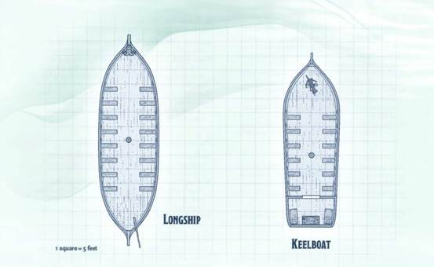

海洋是一个广袤且危机四伏之地，海浪之上和和海面之下都充满了冒险。本附录扩展了玩家手册和地下城主指南中的内容，为水上冒险提供了更多的资源。
船只资料板ship stat block
为了支持进行船只参与战斗，或者精确导航和面对更多其他情况相关的冒险，以下部分提供了新的规则和一些列船舶数据以供使用。
基础数据
船只资料板主要有三个部分：基础数据，动作选项和船只部件。船只无法自己执行动作。离开的船员的操作，一艘船可能会随波逐流，停靠在某处或者脱离控制。
体型SIZE
大部分的船都是大型，巨型和超巨型。一艘船的体型大小取决于它的更长的一边的长或宽，比如，一艘船有10尺长和20尺宽，它的体型取决于更长的宽也就是20尺宽，它是超巨型。
空间SPACE
一艘船不会有内部空间除非它的资料板有特别说明。比如，一艘20尺长，10宽的船有一个20乘10尺的空间。一艘船无法移动进入一个无法容纳它的小空间，如果它这么做，它会撞击，如同后面关于“撞击”的描述。
容量SPACE
一艘船的资料板会显示它可以运载多少生物与货物。生物包括操纵船的船员和乘客。乘客也包括抵御登船者，攻击怪物和敌船的士兵。
旅行里程
旅行里程取决于这艘船在一个小时和一天之内可以走多远。一艘船的移动力与它的部件相关且决定这艘船在一轮内可以移动多远。
属性值ABILITY SCORES
一艘船有六项属性值（力量，敏捷，体质，智力，感知，魅力）和对应的调整值。一艘船的力量代表它的体型和重量。敏捷代表它的操作的流畅度。体质包含了它的耐久与建造质量。一艘船的智力，感知和魅力通常为0。如果这艘船的一项属性为0，它在需要用到那个属性的技能检定和豁免自动失败。
易伤，抗性和免疫VULNERABILITIES, RESISTANCES, AND lMMUNlTIES
一艘船的易伤，抗性和免疫取决于它的部件，除非它的资料板特别注明。
船只通常会免疫毒素和精神伤害。他们通常还免疫以下状态，目盲，魅惑，耳聋，力竭，恐慌，失能，麻痹，石化，中毒，倒地，震慑和昏迷。
动作ACTIONS
资料板的这一部分指出了这艘船能在它的回合做什么，这些动作是特殊动作而非如同生物使用的动作。它甚至需要靠动作来移动，否则它无法移动。船只的船长决定它采取什么样的动作。每个动作在每一回合之中只能被选择一次。
部件COMPONENTS
一艘船由不同的部件组成。
船体Hull.一艘船的船体是它的基础构架，其他的部件都安装在船体上。
操纵Control .操纵部件被用来操纵船。
移动Move .移动部件是使船只能够移动的要素。比如船帆和桨。
武器Weapon. 一艘船在战斗中可以使用一到多个武器部件，而且每一个武器部件都分开使用。
船只资料板可能会描述某些船只部件的特殊规则。
护甲等级AC
每个部件都有护甲等级AC。它的AC反映在它的体型，制作材质以及任何用来提升它防御力的镀层和护甲。
生命值
一个部件会在生命值降到0时损毁或变的无法使用。如果一艘船所有的部件都被摧毁了，这艘船便被破坏了。
船只没有生命骰。
伤害阈值
如果一个船只部件有伤害阈值，伤害阈值会显示在它的生命值后面。一个部件会免疫所有的伤害除非它所受到的那次伤害等于或大于它的伤害阈值，这会使其正常受到那次伤害。没有等于或超过伤害阈值的伤害会被无视且不对部件造成伤害。
船只模板SAMPLE SHIPS
本节提供了一些最常见船舶的数据表，甲板平面图和其他详细信息。
桨帆战舰GALLEY
桨帆战舰是长船，依靠帆和相当多的船员划船移动。这些船只可以携带攻城武器和士兵为商人运输大量货物或者用于战斗。 无论船只用于什么目的，乘客几乎总是雇佣额外的保镖，因为桨帆战舰是海盗眼中的载有丰富货物的大型目标。
桨帆战舰具有以下特点：
天花板。 桨帆战舰下层甲板的天花板高8英尺。
光。 悬挂的灯笼在整个船上投射出明亮的光线。
索具。 船上的索具可以在没有能力检查的情况下攀爬。
帆和桨。 桨帆战舰有一个120英尺高的桅杆，上面有风帆。下层甲板上有划桨，用于划船。
示例桨帆战舰船员EXAMPLE GALLEY CREW
桨帆战舰需要八十名船员正确驾驶或划船，并可能携带额外的乘客或士兵。如果角色是桨帆战舰的客人，船员由以下生物组成，除正常的数据模板外，所有船员均精通水上交通工具。
人员数据：
・一名船长（强盗首领bandit captain）
・其他五名长官：第一个大副，一个甲板长，一个舵手，一个外科医生和一个厨师（斥候scouts）
・四十二名船员（平民commoners）
・十二名攻城工程师（守卫guards）
・二十名守卫guards
|
攻城武器 有些船只装备有攻城武器，其描述在“DMG”第8章的“攻城装备”部分。 在本附录中，攻城装备的名称将以粗体显示，带有括号（DMG，第8章），提醒您在哪里可以找到对象的描述。 |
主甲板MAIN DECK
打帆船的主甲板具有以下特征：
弩炮。 四个弩炮（DMG，第8章）放在在甲板的前部。 在每个弩炮附近堆叠并固定有十个弩箭。
投石机。两个投石机（DMG，第8章）附在甲板的后面。在每个弹射器附近堆叠并固定有十块石头。
撞角。桨帆战舰的末端有一个用于攻击其他船只的铁制撞角。
开口。甲板中间一个10英尺宽，80英尺长从前向后延伸，通向下层甲板的开口。
栏杆。一个3英尺高的铁栏安装在甲板的周边，为中型生物提供半掩护（DMG第8章，184p），为其后面的小型生物提供四分之三掩护。
划艇。八个划艇在这个甲板上分成两组，每组四个。绳索和滑轮可以将这些船放进水中。
定音鼓。在开口到下层甲板之前，一个附带着两支木槌的定音鼓位于主甲板的后部。一名船员会为下层甲板的水手演奏这种乐器，该节拍有助于水手控制船浆同步。
舵轮。舵轮位于船舶驾驶室中用于控制船舵运动、改变船舶航向的手轮。
底层甲板LOWER DECK
桨帆战舰的狭窄下甲板充满了（船员的）体味，具有以下特点：
货舱。货物托在下层甲板的前后，用绳子固定箱子，桶和弹药。
桨。甲板上有三十二个长椅，每个都有一个20英尺长的桨。船员坐在这些长椅上划桨来使船移动。 墙上挂着十个备用桨。
|
桨帆战舰GALLEY 超巨型载具（130尺乘20尺） ―――――――― 在它的回合，桨帆战舰可以采取3个动作，从下面的选项中选择。 如果它少于40名船员，则只需要2个动作，如果少于20个，则只需要1个动作。 如果机组人数少于3人，则不能采取这些动作。 弩炮开火Fire Ballistas。 桨帆战舰可以用弩炮Ballistas射击（DMG，第8章）。 投石车开火Fire Mangonels。桨帆战舰可以使用投石机Mangonels射击（DMG，第8章）。 移动Move。 桨帆战舰可以使用它的船舵使用桨或帆移动。 它可以使用其撞角作为此动作的一部分。
船体HULL ―――――――― AC:15 HP:500（伤害阈值20）
―――――――― AC:16 HP：50 以船的一个移动部件的速度移动，并可进行90度转向。如果舵被摧毁，船无法转向。
―――――――― AC:12 HP:100 每受到25点伤害减少5尺移动速度 移动力（水面）桨，速度30尺
移动：帆SAILS ―――――――― AC:12 HP:100 每受到25点伤害减少10尺移动速度 移动力（水面）帆， 速度35尺；逆风15尺；顺风50尺。
武器：弩炮BALLISTAS（4） ―――――――― AC：15 HP：50/每门 远程武器攻击:命中+6，射程120/480尺，单一目标。命中：16（3d10）穿刺伤害。
武器：投石机MANGONELS（2） ―――――――― AC15 HP:100/每门 远程武器攻击：命中+5，射程200/800尺（无法攻击60尺以内的目标），单一目标。命中：27（5d10）钝击伤害。
武器：撞角NAVAL RAM ―――――――― AC:20 HP:100（伤害阈值10）
这艘桨帆战舰对所有和撞击有关的豁免检定有优势,当它撞击一个生物或物品时，船从撞击中受到的任何伤害都由撞角代替承受。如果是另一个载具撞向该桨帆战舰,这些优势将无法生效。 |
|
|
|
|

龙骨船KEELBOAT
最小的帆船之一，龙骨船可以由一个人航行或划船。经常这些船
运输少量货物或乘客。它们非常适合乘坐游轮，因为它们比大型船舶更容易操作且成本更低。
龙骨船具有以下特点：
光。一盏吊灯或两盏灯在船上投射出明亮的光线。
索具。船上的索具可以在没有能力检查的情况下攀爬。
帆。龙骨船有一个10英尺高的帆桅杆。上面有风帆。
示例龙骨船船员EXAMPLE KEELBOAT CREW
龙骨船需要一名船员顺利运作。如果角色是龙骨船上的客人，船员由一名船长组成，他拥有一名熟练掌握水上交通工具的强盗首领bandit captain的数据。
龙骨船甲板KEELBOAT DECK
龙骨船的甲板具有以下特点：
弩炮。弩炮（DMG，第8章）安装在甲板的前部。十个弩箭在附近堆叠并固定。
桨。船的甲板上有十二个长椅和四个15英尺长的桨。船员坐在这些长椅上划桨来使船移动。
栏杆。一个3英尺高的铁栏安装在甲板的周边，为中型生物提供半掩护（DMG第8章，184p），为其后面的小型生物提供四分之三掩护。
龙骨船船舱KEEL BOAT CABIN
军用提箱。 每个床都是一个军用提箱。军用提箱是铁制，有AC 19,18点生命值，并且免受毒素和心灵伤害。
家具。船尾小隔间里有两张床和一张带椅子的桌子。
|
龙骨船Keelboat 超巨型载具（60尺乘20尺） 生物容量 3名船员，4名乘客 货物容量 0.5吨 旅行里程 3英里/每小时（72英里/每天） 力量16（+3） 敏捷7（-2） 体质13（+1） 智力0 感知0 魅力0 伤害免疫：毒素，心灵 状态免疫：目盲，魅惑，耳聋，力竭，恐慌，失能，麻痹，石化，中毒，倒地，震慑，昏迷 动作ACTIONS ―――――――― 在它的回合，龙骨船可以采取2个动作，从下面的选项中选择。 如果只有1名船员，则只有1个动作。 如果没有船员，就不能采取这些动作。 弩炮射击Fire Ballista。 龙骨船可以用弩炮（DMG，第8章）。 移动Move。 龙骨船可以使用它的船舵随着桨或帆移动方向。
船体HULL ―――――――― AC:15 HP:100（伤害阈值10） 操纵：舵板 HELM ―――――――― AC:12 HP:50 以船的一个移动部件的速度移动，并可进行90度转向。如果舵被摧毁，船无法转向。 移动：桨 OARS ―――――――― AC:12 HP:100 每受到25点伤害减少5尺移动速度 移动力（水面）桨， 速度20尺。 移动：帆 SAILS ―――――――― AC:12 HP:100 每受到20点伤害减少5尺移动速度 移动力（水面）帆， 速度25尺；逆风15尺；顺风35尺。
武器：弩炮BALLISTA ―――――――― AC:15 HP:50 远程武器攻击:命中+6，射程120/480尺，单一目标。命中：16（3d10）穿刺伤害。龙骨船通常只会为了战斗而装备弩炮（DMG，第8章）。 |
|
以下附图（右边）： |
|
|

长船Longship
“长船”指的是依靠划艇和帆船在海上航行的船只。这些船通常用于运送士兵进入战斗。长船的大小使部队很容易迅速地移动，使它成为进行突然袭击的完美船只。长艇有以下特点:
灯。悬挂的灯笼在甲板上投下明亮的光。
索具。船上的索具可以在没有能力检查的情况下攀爬。
舵。这艘船由甲板后部的舵操纵。
帆。长船有一个20英尺高的桅杆和帆，上面有风帆。
示例长船船员EXAMPLE LONGSHIP CREW
一艘长船需要40人左右才能正常航行或划船，通常还会搭载额外的乘客或士兵。如果角色是一艘长船上的客人，船员由以下生物组成。除正常的数据模板外，所有船员均精通水上交通工具。
人员数据：
・一名船长（狂战士berserker）
・其他五名长官：一个大副，一个甲板长，一个舵手，一个外科医生和一个厨师（狂战士berserker）
・三十四名船员（平民commoners）
长船的甲板LONGSHIP DECK
桨。 甲板上有十六个长椅，每个长凳都有一个15英尺长的桨。 船员坐在这些长椅上划桨来使船移动。 墙上挂着五个备用桨。
栏杆。一个3英尺高的铁栏安装在甲板的周边，为中型生物提供半掩护（DMG第8章，184p），为其后面的小型生物提供四分之三掩护。
|
长船Longship 超巨型载具（70尺乘20尺） 生物容量 40名船员，100名乘客 货物容量 10吨 旅行里程 5英里/每小时（120英里/每天） 力量20（+5） 敏捷6（-2） 体质17（+3） 智力0 感知0 魅力0 伤害免疫：毒素，心灵 状态免疫：目盲，魅惑，耳聋，力竭，恐慌，失能，麻痹，石化，中毒，倒地，震慑，昏迷 动作ACTIONS ―――――――― 在它的回合，长船可以使用以下移动动作，若它没有船员则无法动作。 移动MOVE。长船可以使用它的船舵随着桨或帆移动方向。
船体HULL AC15 生命值300（伤害阈值15） 操纵：舵板 HELM AC16 生命值50 以船的一个移动部件的速度移动，并可进行90度转向。如果舵被摧毁，船无法转向。 移动：帆 SAILS AC12 生命值100；每受到25点伤害减少10尺移动速度 移动力（水面）帆，速度45尺；逆风15尺；顺风60尺。 移动：桨OARS AC12 生命值100；每受到25点伤害减少5尺移动速度 移动力（水面）桨，速度20尺。 |
|
以下附图（左边）： |
|
 |
划艇Rowboat
简陋的划艇用于从大型船在湖泊和河流间来回运送乘客。由于其简单多功能的设计，划艇没有甲板或典型的船员。划艇重100磅，便于运输，可能由大型船只运载。
|
划艇Rowboat 大型载具（10尺乘5尺） 生物容量2名船员，2名乘客 货物容量0.25吨 旅行步伐每小时3英里（每天24英里） 力量11（+0） 敏捷8（-1） 体质11（+0） 智力0 感知0 魅力0 伤害免疫：毒药，心灵 状态免疫：目盲，魅惑，耳聋，力竭，恐慌，失能，麻痹，石化，中毒，倒地，震慑，昏迷 动作 ―――――――― 在它的回合，划艇可以使用以下动作。如果他没有船员则无法进行动作 移动。划艇可以使用它的船舵随着桨或帆移动方向。 船体HULL AC11 生命值50 控制与运动：桨OARS AC：12 HP：25 移动力（水）桨：速度15英尺。可进行90度转向。没有桨，划艇的速度是0。 |
帆船和战船SAILING SHIP AND WARSHIP
帆船是一种以旅行为目的而设计的快速船只。战舰则速度较慢，但装备更为精良，能够装载更多货物。它们共享以下许多区域，但正如它们的平面图所示，它们没有完全相同的设施。
帆船或战船具有以下特点:
天花板。下层甲板、货舱和客舱的天花板有8英尺高，有6英尺高的门廊。
门。木质船门，有AC15，18点生命值。免疫毒素和心灵攻击。一把锁可以由盗贼工具来做DC 15敏捷检定成功撬开，或者用DC20力量(运动)检定成功撬开。
储物柜。铁质储物柜，有AC 19, 18点生命值，免疫毒素和心灵攻击。
光。悬挂的灯笼照亮了整艘船。
索具。船上的索具可以在没有能力检查的情况下攀爬。
帆。这艘船有三个80英尺高的桅杆，上面有风帆，下层甲板上有划桨，可以用来划船。
示例船员EXAMPLE CREW
帆船或战船需要大量的船员才能使船只正常航行。战船携带额外的士兵去战斗和攻城武器。如果角色是帆船或战船上的客人，船员由以下生物组成。除正常的数据模板外，所有船员均精通水上交通工具。
人员数据：
?一个队长(强盗首领bandit captain)
?其他四名长官:大副、水手长、舵手、厨师(贵族nobles)
?25名水手(平民c ommoner s)
一艘军舰通常包括以下额外的船员，以增强其战斗能力:
四十个士兵(守卫guards)
八名攻城工兵(守卫guards)
一位祭司(船上的外科医生)
1. 主甲板
船的主甲板有以下特点:
弹射投石机mangonel。帆船有一个 弹射投石机 ((DMG，第8章)，与甲板相连；战船有两个弹射投石机(DMG，第8章)。每个武器有10个弹射投石机的石头弹药，固定堆叠在它附近。
舱口。一个覆盖的10平方英尺的开口通向下层甲板(W8区)。
栏杆。一个3英尺高的铁栏安装在甲板的周边，为中型生物提供半掩护（DMG第8章，184p），为其后面的小型生物提供四分之三掩护。
划艇。四艘划艇位于主甲板同一层。绳索和滑轮可以把这些船降下至水面或者升起。
2. 长官的房间OFFICERS ' QUARTERS
长官的房间里有四张床。每个箱子下面都有一个铁箱子，里面装着长官们的物品。长官们轮班睡觉，所以仍有人值班指挥船员，执行船长的命令。
3.船长的房间CAPTAIN'S QUARTERS
船长的房间里有一张床和一张桌子。床底下有一个铁脚柜，里面放着船长的行李。
4. 攻城武器弹药库SIEGE WEAPON AMMUNITION
小屋墙壁上的架子和绳子固定着弹射投石机的石头和弩炮的箭矢。
5. 补给舱SUPPLIES
这个区域有工具、油桶、绳子、修理船帆的额外材料、以及维护船只所需的其他物资。
6.前甲板FORECASTLE
前甲板具有以下特征：
弩炮。一个弩炮（DMG，第8章）连接到甲板上。每个武器有10个弹药固定堆叠在它附近。
船首像。战船在他们的船头有一个铁质船首像，通常形状看起来像一个可怕的海洋捕食动物。这个船首像作为船的撞角。
栏杆。一个3英尺高的铁栏安装在甲板的周边，为中型生物提供半掩护（DMG第8章，184p），为其后面的小型生物提供四分之三掩护。
7. 后甲板QUARTERDECK
后甲板具有以下特点：
弩炮。一个弩炮（DMG，第8章）连接到甲板上。每个武器有10个弹药固定堆叠在它附近。
栏杆。一个3英尺高的铁栏安装在甲板的周边，为中型生物提供半掩护（DMG第8章，184p），为其后面的小型生物提供四分之三掩护。
舵轮。舵轮位于船舶驾驶室中用于控制船舵运动、改变船舶航向的手轮。位于后甲板的后面。
8. 下层甲板OAR DECK
在下层甲板上建有22个长凳，每个长凳都有一个20英尺长的桨。当船划船时，船员们坐在这些长椅上工作桨。船上挂着十个备用桨。
9.厕所PRIVY
这个房间的墙壁上有一排长凳，有四个水桶来上厕所。
10.医务室MEDICAL CABIN
墙上的挂钩和架子上有医疗器械。绷带、香脂、滋补品、水蛭罐子、以及更多医疗用品，准备好治疗因战斗或航行事故造成的伤害。
11.客厅和囚室GUEST CABIN AND BRIG
这个房间是为客人和高级长官的旅程而准备的。由于战船往往更需要安置囚犯而不是客人，因此这艘战船的每张床上都有一套附带着手铐（见“玩家手册”第5章）。
12.货仓HOLD
这个区域包含乘客和货物。轮换休息的船员在这里的床上休息，这间房间包括食品，水和其他物资。
13. 军械库ARMORY
这艘船上装有武器和装备。它的墙壁上是挂满武器的武器架。这个房间的门通常是锁着的，钥匙由一名船员保管。
|
帆船Sailing ship 超巨型载具（70尺乘20尺） 生物容量 30名船员，20名乘客 货物容量 100吨 旅行里程 5英里/每小时（120英里/每天） 力量20（+5） 敏捷7（-2） 体质17（+3） 智力0 感知0 魅力0 伤害免疫：毒素，心灵 状态免疫：目盲，魅惑，耳聋，力竭，恐慌，失能，麻痹，石化，中毒，倒地，震慑，昏迷 动作 ―――――――― 在它的回合，帆船可以从下面的选项中选择执行3个动作。 如果它少于20个船员，则只能执行2个动作，如果少于10个，则只执行1个动作。 如果机组人数少于3人，则不能执行这些动作。 弩炮射击。 这艘船可以发射它的弩炮（DMC，第8章）。 投石器射击。这艘船可以弹射它的石头（DMC，第8章）。 移动。 可以使用它的船舵随着桨或帆移动方向。 船体HULL ―――――――― AC:15 HP:300（伤害阈值15）
操纵：舵 HELM ―――――――― AC18 生命值50 以船的一个移动部件的速度移动，并可进行90度转向。如果舵被摧毁，船无法转向。
移动：帆SAILS ―――――――― AC12 生命值100；每受到25点伤害减少5尺移动速度 移动力（水面）帆：速度45尺；逆风15尺；顺风60尺。 武器：弩炮BA LLISTA ―――――――― AC:15 HP:50 远程武器攻击：击中+6，射程120/480英尺，一个目标。 命中：16（3d10）穿刺伤害。
武器：弹射投石器MANGONEL ―――――――― AC:15 HP:100 远程武器攻击：+5击中，射程200/800英尺（无法击中60英尺内的目标），一个目标。 命中：27（5d10）钝击伤害。
|
|
|

|
战船Warship 超巨型载具（100尺乘20尺） 生物容量 40名船员，60名乘客 货物容量 200吨 旅行里程 4英里/每小时（96英里/每天） 力量20（+5） 敏捷4（-2） 体质20（+5） 智力0 感知0 魅力0 伤害免疫：毒素，心灵 状态免疫：目盲，魅惑，耳聋，力竭，恐慌，失能，麻痹，石化，中毒，倒地，震慑，昏迷 动作ATIONS ―――――――― 在它的回合，战船可以从下面的选项中选择执行3个动作。 如果它少于20个船员，则只能执行2个动作，如果少于10个，则只执行1个动作。 如果船员人数少于3人，则不能执行这些动作。 弩炮射击Fire Ballistas. 这艘船可以发射它的弩炮（DMC，第8章）。 投石器射击Fire Mangonels这艘船可以弹射它的石头（DMC，第8章）。 移动Move.战船使用它的船舵随着桨或帆移动方向。它可以使用其撞角作为此动作的一部分。
船体HULL ―――――――― AC:15 HP:500（伤害阈值20）
操纵：舵 HELM ―――――――― AC18 生命值50 以船的一个移动部件的速度移动，并可进行90度转向。如果舵被摧毁，船无法转向。
移动：帆SAILS ―――――――― AC12 HP:100；每受到25点伤害减少10尺移动速度 移动力（水面）帆：速度35尺；逆风15尺；顺风50尺。
移动：桨OARS ―――――――― AC12 HP: 100；每受到25点伤害减少5尺移动速度 移动力（水）桨：有80名或更多划手为20英尺，有40名或更多划手为10英尺，有20名或更多划手为5英尺。 武器：弩炮BALLISTAS（2） ―――――――― AC：15 HP:50/每门 远程武器攻击：击中+6，射程120/480英尺，一个目标。 命中：16（3d10）穿刺伤害。 武器：投石器MANGONELS （2） ―――――――― AC:15 HP:100/每门 远程武器攻击：+5击中，射程200/800英尺（无法击中60英尺内的目标），一个目标。 命中：27（5d10）钝击伤害。 武器：撞角NAVAL RAM ―――――――― AC:20 HP:100（伤害阈值10） 当战船撞向一个生物或物体时，战船在所有相关的豁免检定中都有优势。撞击所造成的任何伤害都会被施加到撞角上。 如果另一艘船撞向战舰，这些优势不适用。 |
|
|

――――――――――――――――
长官和船员OFFICERS AND CREW
每艘船都需要人员来管理它们：管理人员和遵守他们命令的水手。
长官类型OFFICERS AND CREW
如果你想要开一艘船，你就需要一系列监管船的运行的长官，这些成员分为六种不同的角色。某些船上的角色是作为训练的专家来指挥船员的工作。其他角色会专注于维持船员的健康和士气状况在一个良好的水准。其中，船长是船舶运作必须填补的唯一角色。一艘船只需要一个人发布命令并对威胁作出反应，否则一艘船在危机期间会出现混乱和混乱。下面将描述每种类型的长官，
每一个角色在接下来都会被描述，以及哪些技能和熟练能帮助角色胜任该工作：
船长Captain。船长负责发布命令。最好的船长拥有极高的智力和魅力属性，且熟练于水上交通工具和技能恐吓和说服。
大副Firstmate。大副会通过密切的监督，鼓舞和惩罚来维持船员的士气高涨。大副受益于高魅力属性，且熟练于技能恐吓和说服。
水手长Bosun。 水手长（或者说甲板长）会提出些技术性建议给船长和船员并且主持修理和维护工作。一个好的水手长会有极高的力量属性，也熟练于木匠工具和运动技能。
舵手Quartermaster。舵手会依靠对航海图的了解，气象和海洋环境知识来测算船的航线，一个称职的导航员需要极高的感知，而且熟练于航海者工具和技能自然。
船医Surgeon。船医会照料伤员，防止疫病在船上扩散和监督医疗卫生。一个有实力的船医收益于高智力属性，且熟练于草药师工具和技能医药。
厨师Cook 。船厨只有有限的材料来烹饪伙食。一个熟练的厨师会在全体船员表现不佳时，振奋船员们的士气。一个有才干的厨师会有极高的体质，且熟练于酿酒工具和厨师工具。
船员CREW MEMBERS
一艘船需要一定数量的身强力壮的船员来运行它，这在船只资料板有显示。一名船员的技能，经验，精神和健康状态被品质值所概括。一个船员的初始品质值为+4，而且会随着时间增加，以-10和+10进行增减。如果船员受伤，过度工作和身体处于不健康状态，品质值会减少。如果船员的士气高昂，身体状况良好且受到明确而公正的领导，品质值会上升。
一个典型的船员要使用《怪物手册》中的平民资料板。
额外规则：忠诚与品质OPTIONAL RULE: LOYALTY AND QUALITY
当处理个别船员时，你可以使用《城主指南》的第四章的忠诚度规则。每有一个忠诚值，这名船员的品质值+10。
叛变MUTINY
一个缺乏领导或被虐待的船员可能会把矛头指向船上的重要成员。每天，如果一个船员的品质值低于0，船长必须做一次魅力检定（恐吓或说服）并受到该船员的品质值调整。
如果检定结果在1到9之间，船员的品质值减少1。
如果检定结果等于低于0，船员叛变。他们对船上的重要成员产生敌意，并且可能计划去谋害，监禁这些重要成员，甚至干脆把他们从船上扔出去。船员会被暴力，战斗等方式恐吓而服从，也会被宝藏和其他奖励收买。
当DM结束一场叛乱后，船员的品质值增加1d4。
岸边休假SHORE LEAVE
船上的生活是对船员的持续煎熬。你能允许船员花时间在港口放松和休整。如果一名船员的品质值等于3或者更低，则船员需要花一天在港口或岸上休息，使他的品质值便提升1。
超级船只升级SUPERIOR SHIP UPGRADES
一些船只拥有非凡的能力，无论原因是由于魔法或高级工匠。下面的升级可以替换船的现有组件或提供一个新元素来增强船的能力。
增加一个升级需要15,000 GP，并且需要ld4周的工作。在这段时间里。船必须留下在港口。如果船在其间离开了，工序必须重新开始，但你不需要支付第二次升级费用。
船体升级HULL UPGRADES
任何具有外壳的船只都能适用于以下一种升级。在某些情况下，升级也会为船只的其他方面带来增益。
风暴船壳CHURNING HULL
这些刻着风暴之神符文的铁链中蕴含着风暴的力量。在风暴之神祝福下行动的掠袭者和海盗有时会使用这个升级。把风暴符文的铁链挂在船身上，猛烈地冲击着船身周围的海水。效果是这艘船210英尺以内的水域，对于除了这艘船以外的任何生物来说都是一个困难的地形。
死亡之船DEATH VESSEL
从堕影冥界中收集的材料制作而成，这一升级使船只成为一艘带有恐惧光环的船。作为一个动作，船可以产生一种令人恐慌的能量脉冲。在210英尺的范围内，对于在船上以及船以外的任何与船为敌的生物，需要进行DC14的感知豁免。豁免失败则该生物会陷入对船的恐慌。豁免成功则该生物对该能力免疫24小时。一旦使用此动作。1d4小时后才能再次使用。
封冻船壳FROST-LOCKED HULL
从元素位面收集超自然的冰制作而成，这个升级使船体以及其他部件免疫冷冻伤害，但是对火焰伤害具有易伤。这艘船还可以在任何厚度的冰面上以正常速度行驶，在冰面上漂浮的深度和在水中一样。
活船LIVING VESSEL
这艘船是由在妖精荒野由雅灵的造船师指导制作而成。船体是一种活的植物，从水和阳光中获取营养。船体有覆盖着厚厚叶子的藤蔓，垂在船的一侧，当船身木板受损时，会流出新鲜的汁液。该升级使船获得对体质检定或豁免检定具有+2加值。只要该船至少有1点生命值，它每分钟就会恢复10点生命值。
加固船身REINFORCED HULL
一个优秀的造船师可以使用优良的材料和巧妙的设计使船体更具弹性。这样的加固使船体的最大生命值加倍。
警戒看守VIGILANT WATCH
沿着这艘船的船体安装一排水晶球，每个水晶球都装满了粘液和一个眼魔的眼球。在120英尺的范围内，可以看到在船上以及船以外的隐形生物。
________
移动力升级MOVEMENT UPGRADES
每个移动部件都有对应的特殊升级，可以从下列选项中获取一次升级。
发条船桨CLOCKWORK OARS
利用魔法和发条装置的结合，这艘船上的桨只需要一名船员来按下启动按钮或者拉动杠杆来启动桨。
顺风帆EVER-FULL SAILS
这些不断飘动的船帆是由风元素位面收集的云编织物制作而成。风在风帆周围呼啸而过，使船只不管风向如何都能以60英尺的速度航行。
嘲讽风帆DEFIANT SAILS
这个风帆使用了魔法在上面镀上了一层秘银，这样使风帆显得十分精美并闪闪发光。此风帆的魔法会使对船只的攻击具有劣势，如果攻击者在船上，此效果无效。
龙鳞风帆DRAGON SAILS
这个风帆由龙鳞编制而成，使它具有更强的抵抗力。风帆的AC（防御等级）获得+3加值。根据列表可以获得对应龙类的伤害抗性。
龙鳞帆种类列表
|
龙的种类 |
伤害类型 |
|
黑龙 |
强酸 |
|
蓝龙 |
闪电 |
|
黄铜 |
火焰 |
|
青铜 |
闪电 |
|
赤铜 |
强酸 |
|
金 |
火焰 |
|
绿 |
强酸 |
|
红 |
火焰 |
|
银 |
冰冻 |
|
白 |
冰冻 |
尖啸之帆SCREAMING SAILS
这些风帆上约束着被捕获的灵魂，在迎风的时候会带有悲伤的低语声。在船帆5尺范围内，船长可以使用一个动作来使船帆发出嚎叫声。每个在船上以及300尺内的敌人必须进行一次DC14的感知豁免，失败则受到4d6点精神伤害，并恐慌1分钟。一旦使用此能力，直到2d6小时之后才能再次使用。
刀锋船桨SCYTHING OARS
利用削尖的船桨来使一艘船更加危险。当船只用这些船桨执行移动动作，在移动路线10尺内的水域的任何生物和物品必须进行DC10的敏捷豁免，失败则受到2d6的挥砍伤害，成功则减半。
武器升级WEAPON UPGRADES
以下升级可以应用于任何安装在船上的武器。一个组件可以升级一次，如果其中一个升级是奥术大炮 则可以升级两次。
奥术大炮ARCANE ARTILLERY
熟练的施法者使用与制作魔法武器相似的方法，向船只武器注入破坏性能量。该武器获得攻击和伤害掷骰获得+2的加值，并且攻击视为魔法攻击。
困惑弹CONCUSSIVE ROUNDS
借助强大的幻术魔法。武器的攻击发出沙哑的噪音，能够暂时分散和迷惑敌人。 如果此武器击中了船只的船体，直到攻击者下一个回合开始为止，该船只的速度会降低2d10尺。
爆炸弹EXPLOSIVE ROUNDS
借助强大的塑能魔法，武器的攻击充满了不稳定的能量，该能量会在弹药的击中后爆炸。当这把武器命中时， 它造成额外的2d6火焰伤害。
束缚弹GRASPING ROUNDS
这种武器在射击的时候跟随着光链，从而命中敌方船只后可以限制其行动。命中目标船只时，目标船只必须通过DC14的力量豁免，否则无法逃脱。攻击船只可以使用一个动作结束此效果，或者目标船只使用一个动作进行DC14的力量检定结束此效果。
船首像升级FIGUREHEADUP GRADES
船首像通常只是装饰，但是它们可以被制作成魔法物品，产生神奇的效果。一艘船可以升级一次船首像。
守护者之像GUARDIAN FIGUREHEAD
这个船首像雕刻成一个全副武装的骑士。使用一个动作，船只可以激活这个雕像，他会变成一个铁魔像iron golem。魔像和船一起行动，船长可以在船只回合使用一个动作命令其行动。
铁魔像持续1分钟，当效果结束时他会传送回船首位置。一旦使用该物品，要24小时后才能再次使用。
红龙之像RED DRAGON FIGUREHEAD
这个船首像雕刻成一个张开血盆大口、蓄势待发的红龙头的模样。使用一个动作，船只可以激活这个雕像，以雕像为起点，发出一个60尺长的锥形火焰吐息。在攻击范围内的生物和物体必须通过一次DC12的敏捷豁免，失败则承受21（6d6）点火焰伤害，成功豁免则承受一半伤害。一旦使用该物品，要1分钟后才能再次使用。
风暴巨人之像STORM GIANT FIGUREHEAD
这个船首像是一个手执闪电的风暴巨人。使用一个动作，船只可以激活这个雕像，以雕像为起点，发出一个60尺长的锥形闪电攻击。在攻击范围内的生物和物体必须通过一次DC12的体质豁免，失败则承受14（4d6）点闪电伤害，成功豁免则承受一半伤害。一旦使用该物品，要1分钟后才能再次使用。
杂项升级MISCELLANEOUS UPGRADES
以下升级不适用于船只的特定部位。一艘船可以使用任意数量的武器来升级，但只能升级一次。
无尽的苦役之骸BONES OF ENDLESS TOIL
船上挂满了古代神秘生物的遗骨。强大的符文雕刻在这些骨骸之上，散发出令人作呕的绿色光芒。当一个类人生物在船上死亡时，该生物必须进行一次DC12感知豁免检定，豁免成功则会正常死亡，否则它会立刻像僵尸一样服从船长。僵尸获得了船的工作知识，允许它作为船员的一员。在任何给定的时间内，许多生物都可以以这种方式被激活。
走私者之帜SMUGGLER 'S BANNER
这面旗子是挂在船上的桅杆上的。强大的魔法使它向看到的人展示出某个组织、船长或国家的象征。在许多人看来，这面旗帜可能会截然不同。
旗帜的真正力量在于它能帮助船只快速逃生。使用一个动作，船只和它上面的所有友好生物传送到3英里（3英里=15840英尺）外一个船长选择的目的地。船上的敌对生物不随船移动，并落入它曾经占据的水域。一旦这个物品被用来传送，要2d6天后才能再次使用。
牙王之鼓TASKMASTER 'S DRUMS
这个4英尺高的青铜鼓配有一对铁槌。 生物可以通过一个动作来激活鼓，使锤子漂浮在鼓上方并敲击产生如同雷鸣一般的鼓点。 在接下来的1分钟里，只要它还至少具有一个动作，该船就会获得一个额外的动作。 一旦使用该物品，要2d10小时后才能再次使用。
船只在战斗中SHIPS IN COMBAT
不论是航海战争还是狩猎臭名昭著的海盗，船只都会制造致命的武器和戏剧性的战场。本节提供了在战斗中使用船只的指南。
船只和先攻SHIPS AND INITIATIVE
一艘船的先攻值可以增加它的敏捷调整值，以及其成员的品质值。在船的回合时，船长船使用的动作。
特殊长官的动作SPECIAL OFFICER ACTIONS
在一次战斗中，船长、大副和水手长都有两个特殊的动作选择:瞄准和全速前进，详情如下。
瞄准TAKE AIM
使用一个动作，船长、大副、或水手长指挥船员进行射击，帮助瞄准船上的一件武器。选择一件在特殊长官10英尺以内的船上武器，在船的下一个回合结束前的下一次攻击检定中获得优势。
全速前进FULL SPEED AHEAD
使用一个动作，在甲板上，船长、大副、或水手长可以鼓励船员更努力地工作，滑动船桨使船只更快前进。知道船只的下一个回合，船只速度获得d6*5的速度加值。如果船只再次使用这个效果则取两次结果的最高值，而不是结果相加。
战斗中的船员CREW IN COMBAT
在战斗中管理整艘船的水手是很麻烦的事情，尤其是大型船上通常会容纳数十名水手。通常，水手们忙于各司其职，无法在战斗中做任何其他事情。除非您要增加复杂性，否则不必刻意的去控制他们。 您可以假设船员在船的上下两个甲板之间平均分配。
船员的伤亡CREW CASUALTIES
杀死一艘船的水手可以大大减少了大多数船可做动作的次数，使水手在战斗中成为一个诱人的目标。根据需要使用《地下城主指南》中的减少多数人重复攻击的规则来解决一些战斗。对于覆盖一个区域的法术，如火球术fireball或闪电束lightingbolt，你可以根据该法术和船员的确切位置，以确定它会影响多少水手。或者你也可以根据每一环的法术增加一个d6来计算影响到的人数。
撞船CRASHING A SHIP
如果一艘船进入了被生物或物体占据的空间，船只可能会被撞毁。如果生物或物体至少比它小两个级别体型，船只就能避免碰撞。
当船只发生碰撞时，船只必须立即进行DC10体质豁免。豁免失败，则它会根据所撞生物或物体的大小对船体造成伤害，如“碰撞伤害表”表所示。
如果物体或生物比它小或大一个级别体型，它也会停止移动。否则，船只将继续移动，并且与之碰撞的生物或物体会移动到船只路径外最近的未占用空间。 DM自行决定将被迫移动的物体是否被摧毁。被船只击中的生物必须进行一次敏捷豁免检定，检定DC等于10 +船的力量调整值，检定失败时根据船的大小“碰撞伤害表”进行伤害计算，成功则只承受一半伤害。
碰撞伤害表
|
尺寸 |
碰撞伤害 |
|
小（S） |
1d6 |
|
中（M） |
1d10 |
|
大（L） |
4d10 |
|
巨型(L+) |
8d10 |
|
超大型(L++) |
16d10 |
在海上旅行TRAVEL AT SEA
不仅仅是海盗和海怪让海上旅行变得如此危险。恶劣的天气、航海事故、被感染的食物、疾病，以及更糟的是，所有这些因素导致了你最得力的船员葬身大海。以下规则有助于DM判断海上航行，特别是一小时或更长时间的航行。本资料以《玩家手册》和《地下城主指南》中的旅行规则为基础。
旅行速度TRAVEL PACE
一艘船的速度在它的资料板会给出。与陆地旅行不同，船只不能选择以更快的速度移动，尽管它们可以选择以更慢的速度移动。如果一艘船的移动方式受到损伤，它可能会减速。速度每下降10英尺，就使船的行驶速度每小时减少1英里，每天减少24英里。
旅行时的活动ACTIVITY WHILE TRAVELING
船上的船员和乘客可以进行的活动与陆上团体旅行的选择略有不同。参考《玩家手册》第8章中的“旅行中的活动”，了解更多关于下面讨论的话题的信息。
一些活动仅限于某些特殊船员参加。除非DM另有规定。例子，DM可以让吟游诗人通过在甲板上吟唱弹奏下流小调来鼓舞士气。聚会的节奏对他们乘船旅行时的活动没有影响。
绘制地图DRAW A MAP
船长经常进行这样的工作，绘制出一幅船的航海图，并在船员迷路时帮助他们回到航线上。不需要进行能力检查。
觅食FORAGE
角色可以钓鱼，肉眼搜寻食物资源。如果DM要求请做一个感知（生存）检定。
振奋士气RAISE MORALE （大副限定）
大副可以调整船员的时间来给他们更长的休息，提供指导并且提升士气。每天，如果船员的品质值低于等于3，大副可以做一个DC15的魅力（游说）检定。如果检定成功，船员的品质值+1。
导航NAVIGATE（舵手限定）
舵手可以尝试防止船只迷路，如果DM要求请做一个感知（生存）检定。（在《城主指南》的第五章的“迷路”查看更多信息）
察觉危害NOTICING THREATS
使用角色或船员的被动感知（察觉）来决定是否有人察觉到隐患。船员的被动感知（察觉）等同于10+船员的品质值。DM可以决定这个危害是否只能由处于这艘船的某个特殊区域的角色察觉。例如，只有在甲板下面的角色才有机会发现或指出有生物藏在船上。
修复REPAIR（水手长限定）
一艘船的水手长可以执行该活动。一天结束时，水手长可以做一个力量检定来使用木匠工具。结果为15和更高的话，每一个受损的部件恢复1d6+该船员的品质值（至少为1）的生命值。除了船体以外生命值为0的部件可以再次使用。
隐匿STEALTH（船长限定）
在环境能见度低的时候，比如浓雾，一艘船的船长可以进行该活动。船只做一个敏捷检定并获得等同于船员品质值的额外加值，以决定船是否隐藏。
危害HAZARDS
海上旅行是一项天生危险的活动。陆地上的风暴可能会使商队陷入泥沼，使商队的行程推迟几天，而在海上，风暴可能会把一艘船劈成两半，使船上的每个人都难逃厄运。漫长的船上生活，会导致脾气暴躁和吵架，而偷偷上船的老鼠会传播疾病和破坏物资。本节介绍了水手在海上可能面临的各种常见危险。
团体检定GROUP CHECKS
为了确定一艘船如何应对这些危险，每一次威胁都需要船的长官和船员进行一次特殊的团体检定(参见《玩家手册》第7章，了解团体检查的工作方式)。危害说明指定了哪些人员可以滚动来进行小组检查。该说明还说明了
长官的属性检定。即使长官进行了不同的属性检定，他们的成败也加进集体检定之中。此外，所有非长官的船员都进行了一次检定，根据船员的品质调整值+D20的结果。长官和机组人员所有这些检定的成败决定了该小组检定的结果。
尽管每种危害都列出了对应的集体检定的人员，但是任何人都可以在紧急情况下尝试进行船员属性检定，但有两个例外情况：首先，只有船长才能进行与船长角色相关检定；没有其他人可以代替船长的位置。其次，其余角色无法帮助的情况下，只剩下有一个角色可以尝试对长官进行检定。
将以上所有检定结果加在一起并与危害检定结果表格做比较，那张表格显示了如果船只在那天遇险是否成功从中生存下来。
确定危害DETERMINING HAZARDS
海上旅行是一件天生危险的事。当你进行一次海洋冒险时，你可以根据你的战役需要选择危险，或者随机产生它们。要随机确定危险因素，在海洋航行的每一天开始时摇一个d20。投出20，这艘船当天面临危险。使用以下两个表来确定危险的性质和它所造成的威胁的DC。
危险的性质
|
d20 |
危险的性质 |
|
1-3 |
水手冲突 |
|
4-6 |
火灾 |
|
7-9 |
大雾 |
|
10-12 |
感染 |
|
13-20 |
风暴 |
危险的DC
|
d20 |
危险DC |
|
1-9 |
10 |
|
10-17 |
15 |
|
18-19 |
20 |
|
20 |
25 |
水手冲突CREW CONFLICT
水手是一群缺乏秩序的家伙。让他们挤进船上狭小的空间里，不可避免地会导致争斗和轻微的犯罪。如果水手之间的不满情绪变得过于强烈，船员长官们必须介入，把事情纠正过来，否则他们会有叛变或更糟的风险。一艘船处理水手冲突会要求船上人员每天一次进行集体检定。检定的DC是随机确定的或从水手冲突DC表中选择的。船长、大副和厨师各做一次能力检查，如船员冲突检定表所示。这项检定代替了该船员当天可能进行的任何其他活动，以此说明他们用行动来安抚船员。如果没有人代表某个特定的船员进行检定，则将导致集体检定失败。
即使水手们在制造麻烦。但是还是有一些人会帮组平息。因此，水手仍然要进行集体检定。为水手摇一个d20，加上质量调整值，并将该检定结果与DC进行对比。
确定有多少次检定成功了――船员和水手的检定――然后查看水手冲突检定结果表。
水手冲突DC
|
DC |
说明 |
|
10 |
小型斗殴或者小偷小摸 |
|
15 |
涉及一定人数的斗殴或者偷窃贵重物品 |
|
20 |
大规模的斗殴导致几人受伤，一件珍贵的物品被盗 |
|
25 |
谋杀，波及到全员的大型叛变 |
水手冲突检定
|
对应船员 |
检定技能 |
|
船长 |
魅力（威吓） |
|
大副 |
魅力（威吓） |
|
厨师 |
智力（酿酒工具） |
水手冲突检定结果
|
结果 |
说明 |
|
大成功 |
水手品质调整值+1 |
|
成功 |
1d4天后冲突结束 |
|
失败 |
水手品质调整值-1 |
|
大失败 |
水手品质调整值-1，水手立即叛变 |
火灾FIRE
海上的一场火灾可以使一艘船变成一艘被烧毁的废船，船员死亡或被迫跳海。如果船上发生火灾，船上的船员必须进行集体检定，协调灭火工作。检定的DC是随机的或从火灾DC表中选择的。一次集体检定代表行动了5分钟。船长、大副、水手长和医生各进行一次能检定，如火灾检定表所示。如果没有人代表某个特定的船员进行检定，则将导致集体检定失败。同样，为水手摇一个d20，加上质量调整值，并将该检定结果与DC进行对比。
确定有多少次检定成功了――船员和水手的检定――然后查看火灾检定结果表。
火灾DC
|
DC |
说明 |
|
10 |
相当于一盏油灯的微不足道着火 |
|
15 |
相当于一个大营火的火灾，并且点燃多个地方 |
|
20 |
迅速蔓延的大型火灾，相当于一个篝火 |
|
25 |
突如其来的火灾，例如装有可燃物的货物被点燃 |
火灾检定
|
对应船员 |
检定技能 |
|
船长 |
智力（水上载具） |
|
大副 |
魅力（威吓） |
|
水手长 |
力量（木匠工具） |
|
医生 |
智力（医学） |
火灾检定结果
|
结果 |
说明 |
|
大成功 |
火焰被完美扑灭，只是表面受到损伤。 |
|
成功 |
火焰被扑灭。船体和其他1d3组水手受到6d6火焰伤害。 |
|
失败 |
船体和其他1d3组水手受到6d6火焰伤害。而且火灾还在继续，继续从头检定。 |
|
大失败 |
水手品质调整值-1，船体和其他1d3组水手受到6d6火焰伤害。而且火灾还在继续，继续从头检定。 |
雾气FOG
陆地起雾最多给通行带来不便，但在海上它可能是灾难性的。能见度降低使航行更加困难，并可能导致船只撞毁。一次集体检定决定了船员们如何度过大雾的一天。检查的DC是随机确定的或从雾气DC表中选择的。船长和舵手各自进行属性检定，如雾气检定表所示。如果没有人代表某个特定的船员进行检定，则将导致集体检定失败。同样，为水手摇一个d20，加上质量调整值，并将该检定结果与DC进行对比。
确定有多少次检定成功了――船员和水手的检定――然后查看雾气检定结果表。
雾气DC
|
DC |
说明 |
|
10 |
薄雾 |
|
15 |
中等程度的雾 |
|
20 |
大雾 |
|
25 |
浓雾 |
雾气检定
|
对应船员 |
检定技能 |
|
船长 |
智力（水上载具） |
|
舵手 |
感知（自然） |
雾气检定结果
|
结果 |
说明 |
|
大成功 |
雾对航行没有影响，并且1d3天内水手品质调整值+1. |
|
成功 |
雾对航行没有影响。 |
|
失败 |
雾使船只航行减速，航行速度减半。 |
|
大失败 |
雾使船慢下来，并让船员丢失方向感。航行速度减半，并朝随机方向移动。 |
感染INFESTATION
准备一次海上旅行是很有挑战性的，特别是在为航行分配资源的时候。鼠患或即使是一种小病的爆发也会给航海带来灾难。这种类型的危险包括疾病、虫害、变质的食物和其他损害船员健康的问题。每天，一艘船处理感染需要船上的人做一个团体检定。检定的DC是随机确定的或从感染DC表中选择的。船长、大副、医生和厨师各做一次技能检定，如感染检定表所示。这项检定代替了该船员当天可能进行的任何其他活动。如果没有人代表某个特定的船员进行检定，则将导致集体检定失败。同样，为水手摇一个d20，加上质量调整值，并将该检定结果与DC进行对比。
确定有多少次检定成功了――船员和水手的检定――然后查看感染检定结果表。
感染DC
|
DC |
说明 |
|
10 |
小虫或鼠患、普通感冒 |
|
15 |
持续的细菌或鼠患、胃病或典型的流感 |
|
20 |
严重的虫害或鼠患、传染性流感或变质的食物 |
|
25 |
大量虫子或者鼠患，致命瘟疫 |
感染检定
|
对应船员 |
检定技能 |
|
船长 |
智力（水上载具） |
|
大副 |
魅力（威吓） |
|
医生 |
智力（医学） |
|
厨师 |
体质（厨师工具） |
感染检定结果
|
结果 |
说明 |
|
大成功 |
水手在1d4天内品质调整值+1，危机结束。 |
|
成功 |
危机结束。 |
|
失败 |
水手品质调整值-1 |
|
大失败 |
水手品质调整值-1，并且导致当天航行速度只有一半。 |
风暴STORM
风和高耸的海浪将船像浴缸中的洗澡玩具一样玩弄。风暴会毁灭掉整只舰队，而且比大多数海怪更常见和更致命。在公海上，风暴比其他威胁都要毁灭掉更多的船只。一艘船在风暴中度过的每一天，都要求船上人员进行集体检定。检定的DC是随机确定的或从风暴DC表中选择的。船长、大副、水手长和舵手各进行一次属性检定，如风暴检定表所示。这项检定代替了该船员当天可能进行的任何其他活动。以此说明他们对保持船只的航行所做的奉献。如果没有人代表某个特定的船员进行检定，则将导致集体检定失败。同样，为水手摇一个d20，加上质量调整值，并将该检定结果与DC进行对比。
确定有多少次检定成功了――船员和水手的检定――然后查看风暴检定结果表。
风暴DC
|
DC |
说明 |
|
10 |
大风 |
|
15 |
强风暴 |
|
20 |
典型的飓风 |
|
25 |
压倒性的飓风 |
风暴检定
|
对应船员 |
检定技能 |
|
船长 |
智力（水上载具） |
|
大副 |
魅力（威吓） |
|
水手长 |
力量（木匠工具）） |
|
舵手 |
感知（自然） |
风暴检定结果
|
结果 |
说明 |
|
大成功 |
船只毫发无损，水手在1d4天内品质调整值+1 |
|
成功 |
船只毫发无损 |
|
失败 |
船只各个部位受到4d10钝击伤害，水手品质调整值-1，船只当天航行速度减半。 |
|
大失败 |
船只各个部位受到10d10钝击伤害，水手品质调整值-2，10%的水手被抛出船外，船只当天航行速度减半，并朝随机方向航行。 |
海洋环境OCEAN ENVIRONS
对于那些陆地上的居民来说，海洋是一个充满难以预知的危险的陌生世界。然而，埋藏在海底的奇珍异宝使得英勇和毫无顾忌的水手们甘愿冒这些风险。本节详细介绍了人们在海面上和波涛之下可能遭遇的各种环境特征。
蓝洞BLUE HOLES
蓝洞是在浅水的海床上形成的圆形沉积空洞。洞中深蓝色的海水与周围浅蓝色的海水形成了鲜明的对比。蓝洞的直径为1d10 x 100英尺，深度为1d10 x 100英尺。
蓝洞中充满了秘密。许多蓝洞里隐藏着怪物与宝藏，如下面蓝洞隐藏物表格所示。
蓝洞隐藏物HIDING IN BLUE HOLES
|
d10 |
生物或者财宝Creatures or Treasure |
|
1 |
2d10只沙华鱼人sahuagin |
|
2 |
1只巨章鱼giant octopus |
|
3 |
1d4+1只甲伏怪chuuls |
|
4 |
一只海鬼婆sea hag和2d4只迈罗鱼人merrow |
|
5 |
一只蛇颈龙plesiosaurus |
|
6 |
1d4个食人鱼集群 swarms of quippers |
|
7 |
2d4只礁鲨reef sharks |
|
8 |
1只巨鲨giant shark |
|
9 |
1d6件来自《城主指南Dungeon Master's Guide》第七章“宝藏”中魔法物品表A中的物品 |
|
10 |
从城主指南第七章“宝藏”宝库宝藏：挑战等级0-4表格中投出的宝藏。 |
珊瑚礁CURRENTS
珊瑚礁遍布海底，虽然大部分都是在距离海岸线150尺深度以内发现的。珊瑚礁的长度和宽度从几尺到1000多英里不等。这些丰富多彩的生态系统容纳了小鱼、甲壳类动物以及软体动物，导致掠食者们到珊瑚礁中寻找猎物。
参差不齐的尖锐珊瑚礁会伤害那些被迫进入它们的家伙。当一种生物并非使用自身的动作、附赠动作或者反应被迫在珊瑚礁中移动时，每在珊瑚礁中被移动过5尺就受到3（1d6）点伤害。
洋流CURRENTS
海水在风和潮汐的作用下流动，形成一种称为洋流的恒定河流状水流。潮汐流通常是最强的，它们通常在距离海岸50英里以内和少于300尺内。这些洋流的速度为每小时1d6英里，每日都在变化着。
洋流在出海越远，在海洋越深的地方就越弱。这些洋流的速度为每小时1d4-1英里，每日都在变化。
洋流与旅行CURRENTS AND TRAVEL
当一艘船只或生物以与洋流相同的方向行进时，这条洋流的速度会加到船只或生物的行进速度中。逆流而行的生物或船只，其速度等于从该生物或船只的行进速度中减去的洋流之后的速度。如果这导致速度为负值，则船只或生物可以让水流携带它们前进。或者，船上的船员或生物可以通过划船或用力游泳来逆流航行，以船或生物正常速度的一半移动。与水流搏斗的船只和生物必须在每小时结束时进行一次体质豁免检定，加值等于船员团队的素质值（如果他们有船员的话）。失败的船员的素质值下降1。失败的生物会获得一级力竭。这一节豁免检定DC是10+与洋流搏斗连续花费的小时数。
被洋流淹没SUBMERGED I N CURRENTS
当一个没有游泳速度的生物被洋流淹没时，该生物必须在回合结束时进行一次力量（运动）检定，或者沿洋流方向被冲走1d4 x 5英尺。这次检定的DC等于10+洋流每小时移动英里数。
深海DEPTH
居住在海面以上的生物越是深入海底，环境就变得越发恶劣。潜入深海者必须谨记这些自然的力量。
光照ILLUMINATION
根据光照，海洋可以被分为三层。
阳光带Sunlight Zone.
阳光带从海面延伸到650英尺的深度。这片海域的自然光照条件与海面一致。
晨昏带 Twilight Zone.
晨昏带在650尺到1000尺深度之间。当上面的阳光带沐浴在自然的明亮光照中时，微光区充满了昏暗的光线。如果阳光带充满了昏暗的光线或是黑暗时，微光带就是一片漆黑的。
午夜带Midnight Zone.
任何1000英尺往下的深度都视为午夜带，因为没有自然光从海面透入到这么深的地方。
压力与温度PRESSURE AND TEMPERATURE
水压，或者生物或物体头顶水的重量，随着深度的增加而增加。相反，温度随着深度的增加而降低。压力和温度对100英尺往下没有游泳速度的生物的影响可以见《地下城主指南》第五章中“非常规环境Unusual Environments”。
可选规则：压力与物体OPTIONAL RULE: PRESSURE AND OBJECTS
根据这条可选规则，在深海潜水的角色需要能够承受海洋压力的专用装备。根据制造它们的材料，不能承受水压的非魔法物体会在不同的深度被摧毁。这一破坏深度是针对在“物件与水压”表格中的各种材料提出的。由其他材料制成的物体由DM自行决定是否破裂。
物件与水压OBJECTS AND WATER PRESSURE
|
材料 |
破坏深度 |
|
玻璃、水晶、冰 |
100英尺 |
|
木头，骨 |
500英尺 |
|
石头 |
1000英尺 |
|
钢、铁 |
1500英尺 |
|
秘银Mithral |
2000英尺 |
|
精金Adamantine |
2500英尺 |
诡雾ELDRITCH MIST
尽管海洋上的天然迷雾对船员们来说是个麻烦，但诡雾却让世界各地的水手都感到恐惧。这些罕见的神秘薄雾几乎无法与自然生成的种类分辨开来，直到为时已晚。
如果一艘船遭遇了诡雾，在“诡雾种类表格”中选择或骰出一种类型。
诡雾种类表格Eldritch Mist Types table
|
d6 |
雾气种类 |
|
1-2 |
幽灵雾Ghost Fog |
|
3-4 |
堕影冥雾Shadowfell Fog |
|
5-6 |
狂野魔法迷雾Wild Magic F og |
雾层厚度MIST THICKNESS
雾气轻度遮蔽其充满的区域，根据其密度，它重度遮蔽一个范围内生物一定距离之外的区域。使用雾层厚度表随机确定雾气的厚度。迷雾模糊表表示了一个生物在雾气中能看到的距离，在之后更远的区域被重度遮蔽。
雾层厚度MIST THICKNESS
|
d10 |
雾层厚度 |
|
1-3 |
薄Light |
|
4-7 |
中等Moderate |
|
8-9 |
重度Heavy |
|
10 |
极重Very Heavy |
雾气模糊程度MIST OBFUSCATION
|
雾层厚度 |
重度遮蔽距离 |
|
薄 |
30尺 |
|
中等 |
20尺 |
|
重度 |
10尺 |
|
极重 |
5尺 |
幽灵雾GHOST FOG
幽灵雾中包裹着被扔进海中的受害者的灵魂。通过一个DC15的智力（奥秘）检定能够发现雾气是幽灵雾。
死者的灵魂希望生者加入它们。一艘船每沉浸在幽灵雾中一个小时，进行一次掷骰。是偶数的场合，2d4个敌对的幽灵Specter出现并袭击船上的人。如果一个类人生物在幽灵雾中死去，它的灵魂会化作一个对非不死生物的生者都充满敌意的幽灵Specter。
所有处于幽灵雾中的非不死生物对暗蚀伤害具有易伤。
堕影冥雾SHADOWFELL FOG
堕影冥雾在两个位面之间边界的薄弱点渗入物质位面。通过一个DC15的智力（奥秘）鉴定能发现雾气是堕影冥雾。
当船只穿过这令人压抑、阴影笼罩的迷雾时，它的船员和乘客都会感到绝望。船只没浸没在雾气中一个小时，船员都必须骰一个D20并将其素质值加到结果中进行素质值检定。该检定的DC为10+船只浸在堕影冥雾中的小时数。如果船员没有通过这一检定，他们的素质值在通过堕影冥雾后的一天之内下降1。
狂野魔法迷雾WILD MAGIC FOG
很少有人知道狂野魔法迷雾的起源，一些人声称它是反复无常的神灵们的造物，而另一些人则认为它是魔法实验出错的结果。通过一个DC15的智力（奥秘）检定能发现雾气是狂野魔法迷雾。
每当一个处于狂野魔法迷雾中的生物施放一个一环或者更高环的法术时，从《玩家手册》第三章“职业”中的狂野魔法浪涌Wild Magic Surge表格中掷骰，来创造出一种魔法效应。
海藻森林KELP FORESTS
海藻生长在海底茂密的森林之中。大多数森林位于距离海岸线不到100英尺的深度，长度和宽度从10英尺到100英里。海藻可以长成长达175英尺的长蔓。
海藻的根很浅，一整片森林都能被一场暴风雨连根拔起，但它的生长速度很快，有时一天高达18英寸，这意味着海带森林可以迅速生长。这样的森林可以藏匿数千条小鱼和其他捕食动物，吸引捕食者。森林是如此的茂密，以至于对10英尺以外的观测者对它当中的一切都处于重度遮蔽，整个地区都是困难的地形。
克拉肯之墓KRAKEN's GRAVE
当克拉肯死后，它们的躯体常常在海底腐朽。在这种情况下，地面吸收了腐烂的克拉肯的超自然能力，用克拉肯身体形状的黑色污痕标记这一区域。这种污痕叫做“克拉肯之墓”。
当一个生物移动到克拉肯之墓30尺以内，或者在这一范围内开始其回合时。该生物必须成功通过DC14的敏捷（隐匿）检定，否则会惊扰坟墓。一旦一个生物惊扰到了坟墓，一条由闪电构成的触须会从地面伸出，并以+7加值攻击这个生物。命中则目标受到10（3d6）闪电伤害，且它必须成功通过DC14体质豁免，否则会在接下来2d4小时内陷入目盲。
诱饵光LURE LIGHTS
当底栖魔鱼死亡时，它们的灵魂有时会聚集成一团，被称为诱饵光。这些直径100英尺的微弱黄色光芒聚集在1000英尺的深海中。它们以100尺为半径发出明亮光照，再外围100尺范围内发出微光。
任何看到诱饵光的生物必须成功通过DC14感知豁免否则被光芒魅惑24小时或指导光芒被破坏。一个成功通过豁免的生物在24小时内免疫诱饵光的效应。
当被光芒魅惑时，生物无法主动让光芒离开它们的视线，并会为保护光芒不惜生命。如果被强行从光芒身边带走，生物会试着自己找到回到它们身边的路。生物无法处于这种状态下进行长休或短休。在24小时后，被魅惑的生物如果能看到光芒，则必须再次进行豁免，成功则结束该效应。如果光芒在这时不在其视线内，则该生物豁免自动成功。
每一团诱饵光具有AC17,100生命值，并免疫暗蚀与毒素伤害。
魔法风暴MAGICAL STORMS
比风暴的威胁更糟糕的是充满魔力的天气的威胁。当一艘船驶入风暴时，骰一个D20.当为20时，风暴充满了魔法的能量。使用魔法风暴种类表，选择或随机确定风暴中充斥的魔法。
魔法风暴种类MAGICAL STORM TYPE
|
d8 |
魔法 |
|
1 |
防护Abjuration |
|
2 |
咒法Conjuration |
|
3 |
预言Divination |
|
4 |
惑控Enchantment |
|
5 |
塑能Evocation |
|
6 |
幻术Illusion |
|
7 |
死灵Necromancy |
|
8 |
变化Transmutation |
防护Abjuration
充满防护魔法的风暴会斥退船只，仿佛在保护海中的什么东西。在风暴结束之前，其中的一艘船被向随机方向传送20英里。
咒法Conjuration
咒法魔法在风暴的中心搅动时，狂风和暴雨的生灵会从遥远的领域出现，攻击它们所遇到的一切事物。船只会遭遇1d3只敌对的气元素air elementals。
预言Divination
当预言魔法渗入风暴时，呼啸的风和残余的低语会扰乱船员们的所知；在接下来的1d3天内，船员的所有素质值检定获得劣势。
惑控Enchantment
充满惑控魔法的风暴会消除生物的危机感，吸引水手并使他们加速驶入危险之中。在风暴期间，为解决危机或管理船只所进行的任何检定都是劣势。
塑能Evocation
这些凶猛的风暴被雷电、大片酸雨、炸裂的流星和其他危险所包裹。在风暴之中的每天之后，船上的每一个部件都会受到1d10火焰、1d10强酸以及1d10闪电伤害。另外，投一个d20并加上船员的素质，在10以下的场合，船员的素质降低1，并杀死其中1d6个船员。
幻术Illusion
一次充满幻术的风暴不会对船只造成直接伤害，但经验丰富的航海家直到它会构成一种潜在威胁。在风暴中，船只朝着一个并非它原本预定航向的随机方向航行。
死灵Necromancy
幽魂在风暴中号哭和旋转，而那些死去已久的水手遗骸则从他们潮湿的坟墓中站起。在风暴期间，1d4只幽灵specters，2d4只食尸鬼ghouls和4d6只僵尸zombie从海浪之中浮起并攻击船只。
变化Transmutation
这些剧烈而难以预料的风暴导致海浪扭曲。风暴将船只周围的水变成冰、石头和奇怪物质的混合物，导致航行变得困难并损毁船只。船体受到4d10钝击伤害，在风暴中船的速度下降一半。
沙洲SANDBARS
海浪和洋流在靠近海岸线的浅水中让沙子沉积起来。这些沙洲形成了一条长度和宽度从10尺带3英里之间的线。涨潮时，沙洲位于海面以下，而在落潮时它们则会从水面上浮现出来。
渡过沙洲NAVIGATING SANDBARS
沙洲对船只形成危险的阻碍。尤其是涨潮时，它们并不太明显。向海浪下面的沙洲移动的船只的船员必须具有12及更高的被动差距，否则不能看到航向上的沙洲（见“注意威胁Noticing Threats”，200页）。当一艘船经过一个被淹没的沙洲时，沙洲视作是困难地形，船只必须成功通过一次敏捷豁免。这次豁免DC与沙洲的深度所对应，如沙洲DC表所示。如果船只没能通过这一豁免，它就会陷在沙丘上。通过使用一个动作进行力量检定（加值等于船员的素质值），来对抗沙洲的DC，船只能够从中脱困。
沙洲DC SANDBAR DCs
|
DC |
描述 |
|
10 |
深沙洲Deep sandbar |
|
15 |
中等深度的沙洲Moderate sandbar |
|
20 |
浅沙洲Shallow sandbar |
腐蚀雪SAPPING SNOW
腐蚀雪――这是海洋探险者们称呼覆盖海底的死亡生物粉末状残骸的说法。当这种物质被死灵魔法充斥时，它就会变成一种吸食生命的碎屑。
当一个生物在其回合开始时接触这些腐蚀雪时，这一生物必须成功通过DC15的体质豁免检定，否则受到10（3d6）暗蚀伤害。该生物的最大生命值减少受到暗蚀伤害的数值。这一减少持续到生物完成一次长休。如果这一效果将生物的最大生命值降低到0，则该生物立即死亡，它的身体瓦解成腐蚀雪。
沉船SHIPWRECKS
沉船是怪物巢穴和失落宝藏的完美场所。沉船容纳物表格中提供了沉船中生物和宝藏的主意。
沉船容纳物SHIPWRECK CONTENTS
|
d10 |
生物或宝藏Creatures or Treasure |
|
1 |
1只沙华鱼人女祭司sahuagin priestess和2d10只沙华鱼人sahuagin |
|
2 |
一只幼年青铜龙young bronze dragon |
|
3 |
4d10只巨蟹giant crabs |
|
4 |
3d10只巨海马giant seahorses |
|
5 |
1d4只寻猎鲨hunter sharks |
|
6 |
1只巨章鱼giant octopus |
|
7 |
2d6只迈罗鱼人merrow |
|
8 |
2d10只人鱼merfolk |
|
9 |
1d6件来自《城主指南Dungeon Master's Guide》第七章“宝藏”中魔法物品表B中的物品 |
|
10 |
从城主指南第七章“宝藏”宝库宝藏：挑战等级5-10表格中投出的宝藏。 |
漩涡WHIRLPOOLS
在风暴或者洋流共同搅动的强劲的水体的区域，可能会形成猛烈的漩涡。漩涡是困难地形，如漩涡等级表中所示，每一个漩涡都有等级，这决定了它的大小和强度。漩涡的深度等于其直径的一半。
漩涡等级WHIRLPOOL RANK
|
等级Rank |
直径Diameter |
速度Velocity |
DC |
|
1 |
22（4d10）尺 |
5尺 |
5 |
|
2 |
55（10d10）尺 |
15尺 |
10 |
|
3 |
110（20d10）尺 |
25尺 |
15 |
|
4 |
165（30d10）尺 |
35尺 |
20 |
漩涡中的生物CREATURES IN WHIRLPOOLS
当一个生物进入漩涡或者在其中开始其回合时，它必须进行以漩涡等级决定的DC进行力量（运动）检定。成功的情况下，该生物可以正常移动。一旦失败，生物会立即以漩涡的速度向漩涡中心移动，它会在下一个回合开始前被漩涡束缚。如果它到达漩涡的中心，该生物会被拉入水面以下，出现在一个特殊的位置（见下“漩涡终点”），或者卷入水下等同于漩涡速度的距离。
漩涡中的船只VESSELS IN WHIRLPOOLS
一旦船只在一个半径比其长度大的漩涡中开始其回合，这艘船的重要成员和船员必须进行一次集体逃脱检定。这一团队检定与对抗危险的特殊检定类似（见200页）。
团队检定代表五分钟内的工作。这次检定的DC从漩涡等级表格中选择或者投掷一个d4随机决定。船长、大副、水手长以及舵手每人进行一次属性检定，如漩涡检定表所示。如果没有人为特定重要成员进行检定，将会导致团队检定失败。同时，为船员投掷一个d20骰，使用其素质值作为该次掷骰的调整值，并与检定的DC相比较。
用团队的检定中成功的数量扣除失败的数量――包括重要成员和船员的――然后查阅漩涡检定结果表。
漩涡检定表WHIRLPOOL CHECKS
|
重要成员Officer |
检定Check |
|
船长Captain |
智力（水上载具） |
|
大副First mate |
魅力（威吓） |
|
水手长Bosun |
力量（木匠工具） |
|
舵手Quartermaster |
感知（自然） |
漩涡检定结果WHIRLPOOL CHECK RESULTS
|
结果Result |
效应Effect |
|
全部成功 |
船只利用了漩涡，在其目前的回合中提升了自己的速度20尺。 |
|
成功 |
船只能在其回合中正常移动。 |
|
失败 |
船只立即向漩涡中心移动漩涡速度的距离，并且船只直到下个回合开始被漩涡所束缚。 |
|
全部失败 |
如同失败。此外，如果船只在其下个回合开始时仍在漩涡之中，船只进行的决定漩涡效应的所有检定具有劣势。 |
漩涡终点WHIRLPOOL DESTINATIONS
虽然漩涡可能是一个将东西拖入海底的暂时的危险，它们也可能是通往另一个国度的暴力通路。在这种情况下被拖入漩涡的物品会沉入其他地方，无论是通往幽暗地域海洋的海底裂缝还是通往另一个位面的传送门。使用漩涡终点表格选择或随机决定漩涡通往的位置，通常会是目的地的一片水域。关于其他位面的目的地信息，请参阅《地下城主指南》第二章。
漩涡终点WHIRLPOOL DESTINATIONS
|
d10 |
终点DESTINATIONS |
|
1-3 |
幽暗地域Underdark |
|
4 |
水元素位面Elemental Plane of Water |
|
5 |
土元素位面Elemental Plane of Earth |
|
6 |
妖精荒野Feywild |
|
7 |
堕影冥界Shadowfell |
|
8 |
星界Astral Plane |
|
9 |
外域Outlands |
|
10 |
DM选择的外层位面 |
海上随机遭遇ENCOUNTERS AT SEA
开放的海域为冒险提供了无限的机会。本节为你提供了各种随机表格，非常适用于列举那些在海浪之上和海浪下面等待你的角色们的挑战。
随机遭遇RANDOM ENCOUNTERS
对于航程中的每一天，除了危险检定外，额外骰一个d20.出目为19或20时，船只就会有随机遭遇。如果你同时掷出了危险检定和随机遭遇检定掷骰，则船只会同时经历它们。它们可能会同时发生，或者按你所选择的顺序发生。
下中表给出的等级能让你创造出角色面临的危险。低等级表格适用于当船只在安全水域航行的时候，而高等级表格则适合远离交通状况良好的航线的原始水域。这些表格允许与其他船只和发现神秘的未知岛屿的遭遇。本附录的后面部分收录了进一步详细说明此类遭遇的其他表格。
开放水域遭遇（1-4级）OPEN WATER ENCOUNTERS (LEVELS 1-4)
|
d100 |
遭遇Encounter |
|
01-03 |
3d6条食人鱼quippers |
|
04-08 |
1个食人鱼集群swarm of quippers |
|
09-12 |
3d10条海豚dolphins（见瓦罗的怪物指南） |
|
13-14 |
1只巨章鱼giant octopus |
|
15-16 |
1d4只虎鲸killer whales |
|
17-18 |
1d6的人鱼merfolk |
|
19-20 |
1d6只巨海马giant sea horses |
|
21-24 |
1d8只巨蟹giant crabs |
|
25-28 |
1d4礁鲨reef sharks |
|
29 |
1只寻猎鲨hunter shark |
|
30-34 |
1d4沙华鱼人sahuagin |
|
35-37 |
1d4个海地精koalinth（见附录C） |
|
38-40 |
一个等级1的漩涡，与水元素位面相连（见“漩涡”，206页） |
|
41-45 |
1d4洛卡鱼人locathahs（见附录C） |
|
46-51 |
1d3只鸟妖harpies |
|
52-54 |
2只迈罗人鱼merrow |
|
55-57 |
1个沙华鱼人女祭司sahuagin priestess和1d4沙华鱼人sahuagin |
|
58-59 |
1个海地精军士koalinth sergeant和1d4海地精koalinth （见附录C） |
|
60-62 |
1只蛇颈龙plesiosaurus |
|
63-64 |
1d3只海鬼婆sea hags |
|
65-67 |
1d4只血鹰blood hawks |
|
68-70 |
1只沙华鱼人勇士sahuagin champion（见附录C） |
|
71-74 |
1只巨鲨giant shark |
|
75 |
1头幼年青铜龙young bronze dragon |
|
76-00 |
一艘船（随机生成） |
开放水域遭遇（5-10级）OPEN WATER ENCOUNTERS (LEVELS 5-10)
|
d100 |
遭遇Encounter |
|
01-03 |
1只巨鲨giant shark |
|
04-07 |
1d4食人鱼集群swarms of quippers |
|
08-11 |
1d10只虎鲸killer whales |
|
12-17 |
3d6只人鱼merfolk |
|
18-25 |
1个沙华鱼人女祭司sahuagin priestess和1d4沙华鱼人塑涛者sahuagin shaper |
|
26-30 |
2d8只巨蟹giant crabs |
|
31-35 |
2d4只礁鲨reef sharks |
|
36-38 |
1d4只寻猎鲨hunter sharks |
|
39-40 |
1d4个水元素 water elementals |
|
41 |
一个等级2的漩涡，与水元素位面相连（见“漩涡”，206页） |
|
42-45 |
2d4洛卡鱼人locathahs（见附录C） |
|
46-47 |
1只鸟妖族长harpy matriarch（见附录C）和1d4只鸟妖harpies |
|
48-49 |
2d4只迈罗人鱼merrow |
|
50-52 |
1个沙华鱼人男爵sahuagin baron和1d4沙华鱼人sahuagin |
|
53-57 |
1个海地精军士koalinth sergeant和2d4个海地精koalinth（见附录C） |
|
58-59 |
2d8只巨蟹giant crabs |
|
60-61 |
1d4只蛇颈龙plesiosauruses |
|
62-63 |
一个三只海鬼婆的集会A coven of 3 sea hags |
|
64-65 |
1d4个沙华鱼人大剑师sahuagin blademasters（见附录C） |
|
66-69 |
1只多头蛇蜥hydra |
|
70-71 |
一个水巨灵marid |
|
72 |
一个风暴巨人storm giant |
|
73 |
一头成年青铜龙adult bronze dragon |
|
74 |
一头龙龟dragon turtle |
|
75-90 |
一艘船（随机生成） |
|
91-00 |
一座神秘的岛屿（随机生成） |
开放水域遭遇（11-20级）OPEN WATER ENCOUNTERS (LEVELS 5-10)
|
d100 |
遭遇Encounter |
|
01-03 |
1只风暴巨人storm giant |
|
04-07 |
2d6只巨鲨giant shark |
|
08-11 |
一个水巨灵marid |
|
12-18 |
1个沙华鱼人高等女祭司sahuagin priestess和1d4沙华鱼人大剑师sahuagin champions（见附录C） |
|
19-25 |
1个沙华鱼人男爵sahuagin baron和1d4个沙华鱼人大剑师sahuagin blademasters（见附录C） |
|
29-32 |
3d6只礁鲨reef sharks |
|
33-39 |
一个等级3的漩涡，与水元素位面相连（见“漩涡”，206页） |
|
40-43 |
一个等级4的漩涡，与水元素位面相连（见“漩涡”，206页） |
|
44-45 |
1d3只多头蛇蜥hydra |
|
46-48 |
1d4个海地精军士koalinth sergeant（见附录C）和3d10个海地精koalinth（见附录C） |
|
49-50 |
2d4只蛇颈龙plesiosauruses |
|
51-53 |
3d6迈罗人鱼merrow |
|
54-57 |
1只鸟妖族长harpy matriarch（见附录C）和2d8只鸟妖harpies |
|
58-60 |
一个三只海鬼婆的集会A coven of 3 sea hags |
|
61-63 |
一头龙龟dragon turtle |
|
64 |
一头远古青铜龙ancient bronze dragon |
|
65-75 |
一艘船（随机生成） |
|
76-00 |
一座神秘的岛屿（随机生成） |
随机船只RANDOM SHIPS
角色们并非唯一在远海航行的航海者。他们遇到的每一艘新的船都提供了冒险的机会。以下规则可以用于生成在开阔海域中遇到的其他船只。
船只种类SHIP TYPE
角色们遇到的船只种类决定了船舶的数据，以及它能承载多少生物或货物。
船只种类SHIP TYPES
|
d100 |
船只Ship |
|
01-09 |
划艇Rowboat |
|
10-25 |
龙骨船Keelboat |
|
26-38 |
长船Longship |
|
39-60 |
帆船Sailing ship |
|
61-79 |
桨帆战舰Galley |
|
80-00 |
战船Warship |
船只名称SHIP NAME
每艘船都有一个名字，你可以自行创造或者使用船只名称表格随机生成。根据表格掷骰――一次形容词，一次名词――来创造一个船名。
船只名称SHIP NAMES
|
d20 |
形容词Adjective |
名词Noun |
|
1 |
美丽Beautiful |
冒险Adventure |
|
2 |
坏脾气Bilious |
藤壶Barnacle |
|
3 |
大胆Bold |
争吵者Brawler |
|
4 |
冰冷Cold |
魔鬼Devil |
|
5 |
时髦Dandy |
龙Dragon |
|
6 |
拂晓Dawn |
宝石Gem |
|
7 |
醉酒Drunken |
花Flower |
|
8 |
火热Fiery |
小丑Jester |
|
9 |
狂怒的Furious |
克拉肯Kraken |
|
10 |
呲牙Grinning |
利维坦Leviathan |
|
11 |
无畏的Interpid |
美人鱼Mermaid |
|
12 |
快乐的Jolly |
王子Prince |
|
13 |
迷雾Misty |
公主Princess |
|
14 |
喧闹的Rambunctious |
复仇Revenge |
|
15 |
赤红Red |
军刀Saber |
|
16 |
皇家Royal |
鲨鱼Shark |
|
17 |
咸的Salty |
潮汐Tide |
|
18 |
罪恶的Sinful |
宝藏Treasure |
|
19 |
虚幻的Twilight |
胜利Victory |
|
20 |
热情的Zealous |
流浪者Wanderer |
船员CREWS
除非你另有安排，否则每一艘在海上遇到的船只都有全部的船员和足够在船只航行期间维持船员和所有乘客生命的食物与水。你可以使用下面“船只目的”部分中的建议生成船员或采用船只类型所建议的船员。
船员成员名字CREW MEMBER NAMES
如果你需要快速生成船员的姓名，下表可以方便地生成一个由两部分组成，适用于任何船员，无关其性别和种族的名字。
船员名字表格CREW MEMBER NAME
|
d20 |
前半First Half |
后半Second Half |
|
1 |
咸Salty |
胡子Beard |
|
2 |
老Ol’ |
眼Eye |
|
3 |
银Silver |
铜板Copper |
|
4 |
金Golden |
鱼Fish |
|
5 |
黑Black |
鲸鱼Whale |
|
6 |
蓝Blue |
狗Dog |
|
7 |
柔软的Silky |
杂种Cur |
|
8 |
无情的Heartless |
手指Finger |
|
9 |
细雨般的Drizzly |
补丁Patches |
|
10 |
饥渴的Thirsty |
钩子Hook |
|
11 |
古怪的Rum |
盐Salt |
|
12 |
阴郁的Gloomy |
耗子Rat |
|
13 |
英俊的Handsome |
魅力Charm |
|
14 |
小Wee |
禽兽Beast |
|
15 |
聪明Clever |
魔鬼Devil |
|
16 |
丑Ugly |
骗子Liar |
|
17 |
漂亮Pretty |
天使Angel |
|
18 |
迷失的Lost |
血Blood |
|
19 |
疯Mad |
地图Maps |
|
20 |
穷Poor |
桅杆Mast |
船只目的SHIP PURPOSE
每艘船都有其航行的理由，可以在船只目的表上滚动或选择。每个目的都在表格后面描述。
船只目的SHIP PURPOSE
|
d100 |
目的Purpose |
|
01-17 |
运送货物Cargo |
|
18-34 |
运送乘客Passenger |
|
35-51 |
捕鱼Fishing |
|
52-68 |
军用Military |
|
69-85 |
海盗Piracy |
|
86-95 |
佣兵Mercenary |
|
96-00 |
幽灵船Ghost |
货物CARGO
货船运送商品、紧急救援物资、旅行马戏团以及其他需要过海的物资。让船只的布局、种族构成和配置来导向船上的载货情况。
大部分的船员和重要成员是平民commoners。带有贵重货物的船只可能会带上2d10个警卫guards与一个 老兵veteran作为警卫队长。运送牲畜的货船可能会在他们的船员和乘客之外额外带有山羊goats、骆驼camels、矮种马draft horses、驴mules，以及其他兽类。
运送乘客PASSENGER
客船携带着旅客们。这些船只被租用语旅行或者游玩、或运送难民、宗教传教士，或者其他和平团体前往重要的目的地。
大部分的船员和重要成员是平民commoners。带有贵重人物的船只可能会带上2d10个警卫guards与一个 老兵veteran作为警卫队长。尽管许多生物需要坐船旅行，船上额乘客一般由平民和贵族组成。
捕鱼FISHING
捕鱼船包括捕捞鱼和甲壳类动物并在市场上出售的商业船只，捕鲸船，以及追踪鲨鱼、巨型章鱼和其他海洋怪物的狩猎船。任何为了利益、生存或运动而猎取海洋生物的船只都具有这个目的。
大部分的商业捕鱼船上船员和重要成员都是平民commoners，但捕鲸船和狩猎活动的船只的队伍中则常常有斥候scouts相随。
军事用途MlLlTARY
军用船只运送士兵参战，并装备在海上作战的武器。这些船只追捕海盗，保卫和入侵领土，运载重要的政府货物，护送官员，运送囚犯，并做他们的指挥官所要求的任何事情。
大部分军用船只上的船员都是警卫guards或者斥候scouts。重要成员由老兵veterans担任。许多军用船只载着额外的警卫guards，作为入侵、登船和操纵攻城武器的乘客。一艘军用船只也可能携带1d4个强盗bandits或守卫guards作为囚犯。
海盗PIRACY
海盗们走私违禁品并劫掠其他船只、海滨城镇和哨所。他们从事犯罪活动，但并非所有人都是邪恶的。许多海盗都有其道德规范。有些人以私掠者的身份为政府服务，只伤害他们的敌人，而另一些人则只抢劫腐败分子，把他们的不义之财送给穷人。
大部分海盗船上的船员都是强盗bandits。重要成员则是强盗首领bandit captains，也可能包括一位海盗船长pirate captain（见附录C），一位海盗水手长pirate bosun（见附录C）。许多海盗船还带着额外的强盗bandit以及至少一位海盗甲板法师pirate deck wizard（见附录C）作为乘客。
佣兵MERCENARY
佣兵们环游世界寻找冒险和报酬。他们探索未知的领土，打仗，消灭怪物，护送特殊的货物或者人物，并会答应任何报酬合适的任务。
佣兵船上有着与军用船只相似的船员或乘客。
幽灵GHOST
幽灵船是携带不死生物船员的无实体船只。船员们通常以可怕的方式死去，却还有未竟的事业，这将他们束缚在物质位面。他们有时会为法师服务，但更常见的情况则是这些船员们没有主人。
一艘幽灵船与其同一船舶类型的船只有着相同的数据，并具有如下变化：
・这艘船具有对如下伤害类型的抗性：强酸、火焰、闪电、以及雷鸣，还有非魔法武器攻击的钝击、穿刺和挥砍。
・这艘船免疫冷冻、暗蚀、毒素以及心灵伤害。
・这艘船能够如同穿过困难地形一样移动穿过其他生物和物件。如果它在自己回合结束时仍处在物体内部则受到5（1d10）点力场伤害。
善良或中立的幽灵船上的船员和重要成员是幽魂ghost。在邪恶的幽灵船上，百分之九十的船员是骷髅skeletons和僵尸zombies（甚至两者的混合），百分之十是幽灵specters，其重要成员则是缚灵wraiths。
态度与种族ATTITUDE AND RACE
每艘船的船员和乘客们都具有某种态度，指导他们如何与角色互动。友善的船只会寻求贸易或分享消息。中立态度船只如果感到威胁就会发起攻击，否则试图避免接触。而敌对船只则会试图攻击并夺取角色们的船。
首先，根据船只态度表选择一种船只的态度或者掷骰，然后在对应的表格上掷骰决定船员的种类。选择或者掷骰生成的种族不一定是船上唯一的种族，你可以多次使用表格，来让船员与乘客更加多样化。如果你认为这更适合船上的种族，可以自由地将建议的数据替换成其他的数据（比如说，在一艘由兽人驾驶的海盗船上，将强盗bandit的数据替换为兽人orc的数据）。
船只态度SHIP ATTITUDE
|
d6 |
态度Attitude |
|
1-2 |
友善Friendly |
|
3-4 |
中立Neutral |
|
5-6 |
敌对Hostile |
友善船只FRIENDLY SHIP
|
d100 |
种族Race |
|
01-05 |
龙裔Dragonborn |
|
06-10 |
矮人Dwarves |
|
11-30 |
精灵Elves |
|
31-40 |
侏儒Gnomes |
|
41-50 |
提夫林Tieflings |
|
51-60 |
半身人Halflings |
|
61-00 |
人类Humans |
中立船只NEUTRAL SHIP
|
d100 |
种族Race |
|
01-05 |
龙裔Dragonborn |
|
06-10 |
矮人Dwarves |
|
11-30 |
蜥蜴人Lizardfolk |
|
31-40 |
大地精Hobgoblins |
|
41-50 |
兽人Orcs |
|
51-60 |
半身人Halflings |
|
61-00 |
人类Humans |
敌对船只NEUTRAL SHIP
|
d100 |
种族Race |
|
01-05 |
霜巨人Frost giant |
|
06-10 |
狗头人Kobolds |
|
11-30 |
兽人Orcs |
|
31-40 |
大地精Hobgoblins |
|
41-50 |
不死生物Undead |
|
51-60 |
豺狼人Gnolls |
|
61-00 |
人类Humans |
船只倾向SHIP DISPOSITION
每艘船只都有一种倾向来决定当角色们遇到它的时候在船上发生的事件。根据船只倾向表格选择或者掷骰决定一种船只倾向。每一种倾向在表格后面都有描述。如果你骰出没有特殊倾向，这艘船则没有特别的压力，会根据其态度做出反应。
船只倾向SHIP DISPOSITION
|
d6 |
倾向Disposition |
|
1 |
染病Diseased |
|
2 |
紧急事件Emergency |
|
3 |
帮助实现目的Help with purpose |
|
4 |
哗变Mutiny |
|
5 |
交易Trading |
|
6-10 |
没有特殊倾向No special disposition |
染病DISEASED
骰一个百面骰。结果显示出这艘船的船员和乘客中感染一种你从《地下城主指南》的第八章“运作冒险Running the Game ”里“范例疾病”中选择的疾病的百分比。这艘船驶向角色们，并开始要求他们帮助其控制感染状况。
幽灵船不会染病，如果你对幽灵船骰出了这个结果，无视它并重新掷骰。
紧急事件EMERGENCY
一艘发生紧急事件的船只正遭受了某种危机。船员和乘客们乞求或者要求角色们的帮助来脱离这一状况。
从船只紧急状况表格中选择或掷骰决定一种船只的危机。
船只紧急事件SHIP EMERGENCY
|
D4 |
EMERGENCY |
|
1 |
这艘船的船员失踪了 |
|
2 |
这艘船遭到了破坏，无法转向，只能随波逐流 |
|
3 |
这艘船陷在了沙洲上 |
|
4 |
这艘船正在沉没 |
帮助实现目的HELP WITH PURPOSE
寻找能够帮助他们实现目的的船员们接近角色们，请求他们在任务中进行帮助。比如，佣兵们请求帮助绘制一处未经勘探区域的地图，货船上的船员们请求角色们担任护卫。大部分船员会提供报酬来换取角色们的服务，尽管一些困难会通过威胁或者乞求来希望得到无偿的帮助。
哗变MUTINY
准备哗变的船员们对他们上级的领导不满，并计划推翻他们。上级人物向角色们请求或要求帮助平息哗变，或者船员们请求帮助造反或者试图欺骗角色们杀死他们的上级。
交易TRADING
寻求交易的船员和乘客们用他们的货物或者服务换取行动、物品或者钱财。利用船的目的来导向他们必须要交易的东西。比如说，商业捕鱼者们可能会提供一箱子珍贵的螃蟹来换取一只一只对他们造成损失的鲨鱼的头颅，而海盗们则可能提供偷来的药水来换取宝石和黄金。大部分提供交易的人都愿意讨价还价。如果角色们拒绝交易，邪恶阵营的船员和乘客或许会发起攻击来得到他们想要的东西。
神秘岛屿MYSTERIOUS ISLANDS
在各种各样的冒险可能发生的遥远或未经探索之处，大部分的海洋里都星罗棋布着许多小型岛屿。以下规则能用于生成角色们可能遭遇的任何岛屿。
岛屿尺寸ISLAND SIZE
这些规则用于生成区域范围约1d6英里长，1d6英里宽的小岛。大部分岛屿都不会是完美的矩形，大部分海岸线也并不笔直，所以请按照自己认为合适的方式随意缩短、拉长、变窄或者加宽岛屿的区域。
岛上环境ISLAND HABITAT
一个岛屿可以具有任何适合它所在气候地带合适的环境。比方说，在北极的海洋中能找到浮冰的岛屿，而热带水域则有丛林环境的岛屿。然而，并非所有岛屿都由自然创造。一个强大的施法者或者神圣存在能够召唤出一个由水晶、钢铁或者任何你所选择的材料构成的岛屿。
岛屿主题ISLAND THEME
每一个所遇到的岛屿都有一个根据岛屿主题表格选择或者掷骰生成的主题。这一主题以一个宽泛的方式来定义岛屿的故事。一旦你有了一个主题，你就能在表格之后查阅它的部分来决定相关的细节和故事的引入。
岛屿主题ISLAND THEME
|
d6 |
主题Theme |
|
1 |
异域Alien |
|
2 |
遭受诅咒Cursed |
|
3 |
敌对Hostile |
|
4 |
庇护所Sactum |
|
5 |
友善Welcomiing |
|
6 |
荒野Wild |
异域Alien
异域岛屿居住着一些与世隔绝的生物，其生命形式难以为大多数人所理解。对于外来者来说，岛上从建筑到食物的一切都十分陌生且令人不安。在你的选择下，岛上的土著们或许会说、读、书写一种自己的语言。
异域岛屿首领ALIEN ISLAND LEADER
|
d6 |
首领Leader |
|
1 |
底栖魔鱼Aboleth |
|
2 |
眼魔Beholder |
|
3 |
史拉亡蟾Death slaad |
|
4 |
克拉肯Kraken |
异域岛屿居民ALIEN ISLAND INHABITANTS
|
d6 |
居民Inhabitants |
|
1 |
1d6狂战士berserkers和5d10部族武者tribal warriors |
|
2-3 |
1d6邪教狂热者cult fanatics和5d10邪教徒cult |
|
4 |
1d6蜥蜴人萨满lizardfolk shamans和5d10蜥蜴人lizardfolk |
|
5 |
1d6 狂蛙人鸣唱者bullywug croakers（见附录C）和5d10 狂蛙人bullywugs（见附录C） |
|
6 |
1d6 洛卡鱼人猎手locathah hunters（见附录C）和5d10洛卡鱼人 locathah（见附录C） |
异域岛屿反应AlIEN INHABITANT REACTIONS
|
d6 |
反应Reaction |
|
1 |
居民们想要强迫角色们侍奉他们的首领。 |
|
2 |
居民们向角色们索求给他们的领袖一件价值10d10 x100gp的东西 |
|
3 |
居民们想要吃掉角色们 |
|
4 |
一些居民计划起义反抗他们的领袖，并向角色们寻求帮助 |
|
5 |
岛上的土著们视角色们如蝼蚁，如非强迫不愿意与他们交流 |
|
6 |
土著们将角色们奉为神灵，能够被说服来崇拜他们 |
异域岛屿故事引子ALIEN ISLAND STORY HOOK
|
d4 |
故事引子Story Hook |
|
1 |
首领的收藏中有一张完全复生术 true resurrection卷轴。 |
|
2 |
这座岛屿上有一片碑牌，上面说明了如何打开一座通往遥远国度the Far Realm的传送门。 |
|
3 |
岛上的领袖知道如何终止一场感染人形生物聚落的位面瘟疫。 |
|
4 |
一位拥有角色们需要信息的魔法师mage藏在土著居民之中，学习他们的生活方式。 |
遭受诅咒Cursed
遭受诅咒的岛屿浸没在死灵法师、鬼婆集会、邪恶的施法者、恶毒的神灵或者更糟的存在所施展的黑暗魔法之中。岛上也许仍然留有一些暗示，关于它为何遭受诅咒，或者所有关于将痛苦降临到这里之人的痕迹都已经被消去。
岛屿诅咒 ISLAND CURSES
|
d6 |
诅咒Curse |
|
1 |
当一个生物在岛上死亡之后，它的灵魂会在死后1d4小时复生成一个幽灵specter。该幽灵执着地想要杀死它曾经的朋友。 |
|
2 |
并非原住民的生物每在岛上度过一个小时结束时必须进行一次体质豁免检定。如果在豁免中失败，它们则会获得一级力竭。这一检定的DC等于10+他们在岛上度过的小时数。 |
|
3 |
每天黎明，这座岛屿会召唤出2d10只对并非岛上原住民的生物充满敌意的熔岩魔蝠magma mephit 。 |
|
4 |
当一个并非岛上原住民的生物在此处完成一次长休之后，它必须成功通过DC15的感知豁免检定否则陷入目盲8小时。 |
|
5 |
在每一个它们在岛上度过的小时结束时，生物必须成功通过DC10的体质豁免。如果豁免失败，它们身上的随机部位就会长出一片1英尺长的疤痕。只有移除诅咒remove curse法术能消去疤痕。 |
|
6 |
当一个并非岛上原住民的生物在此处完成一次长休之后，它必须成功通过DC15的感知豁免检定否则获得一种随机症状的长期疯狂（见《地下城主手册》第八章，运作游戏，“疯狂”）。 |
诅咒岛屿居民CURSED ISLAND INHABITANTS
|
d6 |
居民Inhabitants |
|
1 |
5d10个幽灵specters |
|
2 |
10d10个僵尸zombies |
|
3 |
一个由三只海鬼婆sea hags组成的集会和1d4个燃焰之颅flameskulls |
|
4 |
一个美杜莎medusa和3d10个骷髅skeletons |
|
5 |
一个吸血鬼vampire和2d6个吸血鬼衍体vampire spawn |
|
6 |
一个半巫妖demilich和2d10个缚灵wraiths |
诅咒岛屿故事引子CURSED ISLAND STORY HOOK
|
d4 |
故事引子Story Hook |
|
1 |
这座岛上有角色们需要的稀有的法术材料。 |
|
2 |
海盗在这座岛上埋藏了5d6 x1,000gp的宝藏。 |
|
3 |
一艘载着1d6名平民comeoners的龙骨船撞在了这座岛上。这些平民正在艰苦求生。 |
|
4 |
一位角色所爱之人的幽魂ghost被困在了这座岛上。 |
敌对HOSTELE
敌对岛屿上有想要伤害角色们的生物。这些生物用陷阱填满它们的岛屿，并处于饥饿，无聊和恐惧攻击外来者。
敌对岛屿首领HOSTILE ISLAND LEADER
|
d6 |
首领Leader |
|
1 |
云巨人Cloud giant |
|
2 |
山丘巨人Hil giant |
|
3 |
恶鬼Oni |
|
4 |
精魂娜迦Spirit naga |
|
5 |
狼人Werewolf |
|
6 |
一种DM选择的色彩龙 |
敌对岛屿首领动机HOSTILE ISLAND LEADER MOTIVATIONS
|
d4 |
动机MOTIVATION |
|
1 |
首领想要征用一艘船去征服其他的岛屿。 |
|
2 |
首领拿走了它的追随者获得的财宝，依靠他们的暴行变得富裕。 |
|
3 |
首领需要人形生物的残骸来进行一项带有黑暗目的的仪式。 |
|
4 |
因为消耗了它的追随者杀死生物的灵魂，首领永远也不会衰老。 |
敌对岛屿居民HOSTILE ISLAND INHABITANTS
|
d6 |
居民Inhabitants |
|
1 |
3d10个带翼狗头人winged kobolds和10d10个狗头人kobolds |
|
2 |
1个地精头目goblin boss和8d10个地精goblins |
|
3 |
1d6狂战士berserkers和5d10个部落武者tribal warriors |
|
4 |
一个兽人酋长orc chieftain*，2d10个魔兽人orogs和5d10个兽人orcs |
|
5 |
4d10食人魔ogres |
|
6 |
3d10巨魔trolls |
*疑似应为兽人军官orc war chief
敌对岛屿故事引子ALIEN ISLAND STORY HOOK
|
d4 |
故事引子Story Hook |
|
1 |
这座岛上的首领杀死了一位角色们所仰慕的NPC。 |
|
2 |
岛上的首领有一条智力头带headband of intellect。 |
|
3 |
角色们被对手所挑战要在岛上活一个晚上。 |
|
4 |
岛上的首领以雄辩的口才邀请角色们加入一场狩猎。 |
庇护所SANCTUM
庇护所岛屿的居民们使用海洋来保护自己和他们的财富，或者他们只是享受偏远岛屿所带来的与世隔绝。在庇护所岛屿上的生物通常生活在修道院、堡垒、图书馆或者塔楼这样长久的建筑之中。
庇护所岛屿首领SANCTUMISLAND LEADER
|
d6 |
首领Leader |
|
1 |
大法师Archmage |
|
2 |
巫妖Lich |
|
3 |
夜鬼婆Night hag |
|
4 |
贵族Noble |
|
5 |
罗刹Rakshasa |
|
6 |
熊人Wreabear |
庇护所岛屿居民SANCTUM ISLAND INHABITANTS
|
d6 |
居民Inhabitants |
|
1 |
5d10个警卫guards和10d10个平民commoners |
|
2 |
一位海盗船长pirate captain（见附录C），一位海盗水手长pirate bosun（见附录C），2d4个海盗甲板法师pirate deck wizard（见附录C）和8d10个强盗bandit |
|
3 |
1d6具血肉魔像flesh golems和1d4个祭司priest，以及2d10个侍僧acolytes |
|
4 |
2d4个老兵veterans，2d10个斥候scouts和4d10个警卫guards |
|
5 |
1d4具石魔像stone golems，1d4个魔法师mage，以及3d10个警卫guards |
|
6 |
1具构装盾卫shield guardian，2d4个骑士knight，2d6个祭司priest以及6d10个平民commoners |
庇护所岛屿反应SANCTUM INHABITANT REACTIONS
|
d6 |
反应Reaction |
|
1 |
角色们被允许登岛，但居民们不允许他们进入任何建筑。 |
|
2 |
居民们喜欢角色们并给予了能帮助在首领面前留下深刻印象的建议。 |
|
3 |
一些郁郁寡欢的居民们相信角色们是他们离开岛上的契机，他们引诱、欺骗、贿赂以及乞求角色们带他们离开。 |
|
4 |
居民们试图说服角色们将这个岛屿作为行动基地，并为聚居地做贡献。 |
|
5 |
岛上的居民渴望得到外面世界的信息，并允许角色们把消息作为货币使用。 |
|
6 |
岛上的居民并不信任角色们，所有用于影响居民们的魅力检定都具有劣势。 |
庇护所岛屿故事引子SANCTUM ISLAND STORY HOOK
|
d4 |
故事引子Story Hook |
|
1 |
一名居民中的间谍spy需要被从岛上揪出来。 |
|
2 |
岛上的首领思念一件无法再岛上寻得的东西（比如一支花或者一种特殊的食物），并为这件东西提供报酬。 |
|
3 |
这个岛屿寻求援助以对抗一条频繁劫掠此地的成年绿龙adult green dragon。 |
|
4 |
岛上有一个装满传说中的精金和镀银武器的军械库。 |
友善WELCOMING
友善岛屿上的生物对角色们十分友好。一旦建立了友谊，这些生物能为角色们提供力所能及的帮助，即使那可能会对他们自己不利。
友善岛屿首领WELCOMING ISLAND LEADER
|
d6 |
首领Leader |
|
1 |
诗人Bard（见附录C） |
|
2 |
德鲁伊Druid |
|
3 |
巡守娜迦Guardian naga |
|
4 |
树人Treant |
|
5 |
独角兽Unicorn |
|
6 |
一种DM选择的金属龙 |
友善岛屿居民WELCOMING ISLAND INHABITANTS
|
d6 |
居民Inhabitants |
|
1 |
5d10个阿兰寇拉鹰人 aarakocra |
|
2 |
8d8只皮克精pixies和8d8只小妖精sprites |
|
3 |
1d6蜥蜴人萨满lizardfolk shamans和5d10蜥蜴人lizardfolk |
|
4 |
1d6德鲁伊druids和5d10个部落武者tribal warriors |
|
5 |
3d10个人马centaurs |
|
6 |
3d10个斥候scouts以及5d10个平民commoners |
友善岛屿故事引子WELCOMING ISLAND STORY HOOK
|
d4 |
故事引子Story Hook |
|
1 |
这座岛屿是由一个国家或者一位角色们有联系的富有贵族赞助的殖民地或者哨所。 |
|
2 |
这座岛上的居民发誓一名角色酷似一位受到爱戴的前领袖。他们像对待他们失去的英雄一样对待角色们。 |
|
3 |
这座岛屿从未有人到访。角色们的抵达引起了一场怪异但热情的庆祝。 |
|
4 |
这座岛屿的首领是一位角色家族里失踪已久的亲戚或者朋友。 |
荒岛WILDISLAND
自然统治着这座岛屿。这座岛上的生物们回应着自然世界的兴衰，而不是试图驯化环境。
荒岛遭遇W ILD IS LAND ENCO UNTERS
|
D20 |
遭遇Encounter |
|
1 |
2d8只狒狒baboons |
|
2 |
1d4头棕熊brown bears |
|
3 |
1头枭熊owlbear |
|
4 |
2d6只巨蟾蜍giant toads |
|
5 |
2d10只巨黄蜂giant wasps |
|
6 |
2d4只巨蜘蛛giant spiders |
|
7 |
4d4只皮克精pixies和4d4只小妖精sprites |
|
8 |
1d4只闪现犬blink dogs |
|
9 |
正在挖出宝藏的1位海盗船长pirate captain和3d10个强盗bandits |
|
10 |
3d6个部族武者tribal warriors |
|
11 |
2d4个德鲁伊druid |
|
12 |
1d6个树精dryads |
|
13 |
2d4个人马centaur |
|
14 |
一头掘地虫ankheg |
|
15 |
1d10只巨野猪giant boars |
|
16 |
2d6只巨鹰giant eagles |
|
17 |
1d4只巨猿giant apes |
|
18 |
1d4个树人treant |
|
19 |
1只大鹏roc |
|
20 |
1d4个老兵veteran探险家 |
荒岛故事引子WELCOMING ISLAND STORY HOOK
|
d4 |
故事引子Story Hook |
|
1 |
这座岛屿藏着一眼能复活任何在其中洗浴的生命的泉水，就像经历了死者复活raise dead法术一般。一个生物仅能从这眼泉水受益一次。 |
|
2 |
一位风巨灵djinni隐士居住在这座岛上并乐意给予恩惠。 |
|
3 |
皮克精pixies们乞求角色们帮助他们从岛上驱逐一队赏金猎人（斥候scout）。 |
|
4 |
这座岛上坐落着一位大德鲁伊的坟墓，其中有着一座通往妖精荒野Feywild的传送门。 |